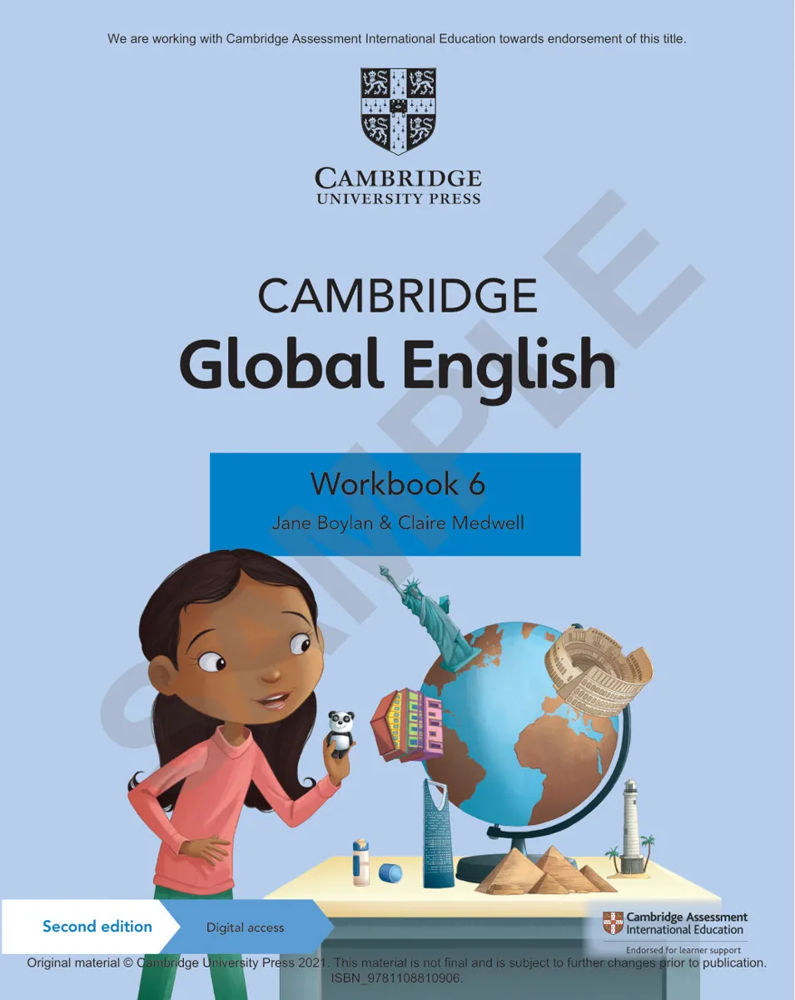
We are working with Cambridge Assessment International Education towards endorsement of this title.
CAMBRIDGE
Global English
Workbook 6
Jane Boylan & Claire Medwell
Second edition
Digital access
Original material © Cambridge University Press 2021. This material is not final and is subject to further changes prior to publication.
ISBN_9781108810906.
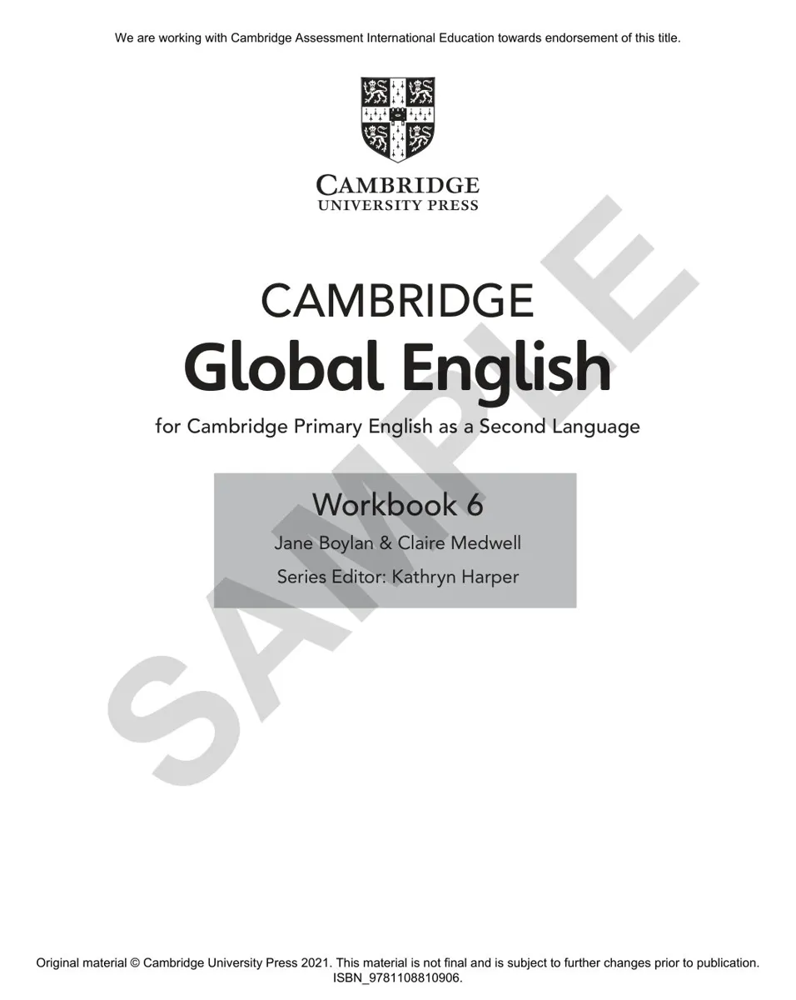
We are working with Cambridge Assessment International Education towards endorsement of this title.
CAMBRIDGE
Global English
for Cambridge Primary English as a Second Language
Workbook 6
Jane Boylan & Claire Medwell
Series Editor: Kathryn Harper
Original material © Cambridge University Press 2021. This material is not final and is subject to further changes prior to publication.
ISBN_9781108810906.
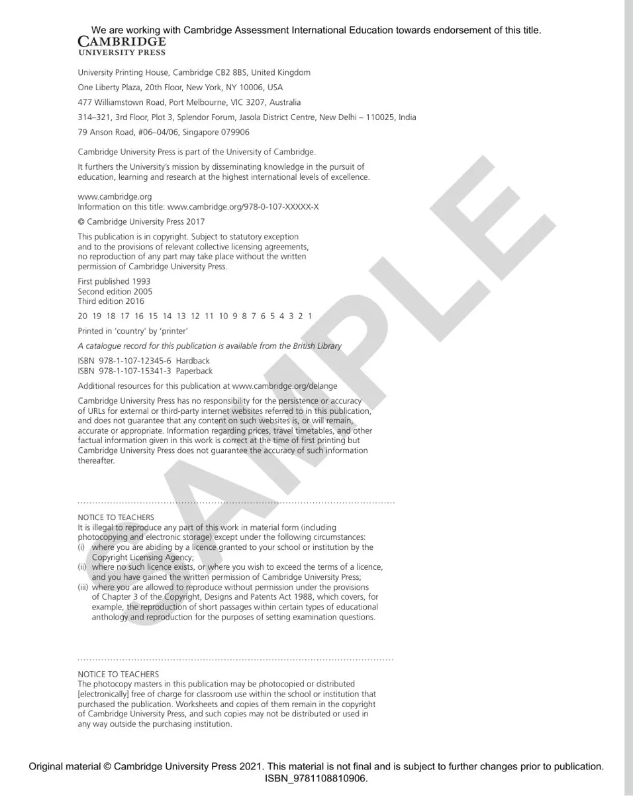
We are working with Cambridge Assessment International Education towards endorsement of this title.
University Printing House, Cambridge CB2 8BS, United Kingdom
One Liberty Plaza, 20th Floor, New York, NY 10006, USA
477 Williamstown Road, Port Melbourne, VIC 3207, Australia
314–321, 3rd Floor, Plot 3, Splendor Forum, Jasola District Centre, New Delhi – 110025, India
79 Anson Road, #06–04/06, Singapore 079906
Cambridge University Press is part of the University of Cambridge.
It furthers the University’s mission by disseminating knowledge in the pursuit of
education, learning and research at the highest international levels of excellence.
www.cambridge.org
Information on this title: www.cambridge.org/978-0-107-XXXXX-X
© Cambridge University Press 2017
This publication is in copyright. Subject to statutory exception
and to the provisions of relevant collective licensing agreements,
no reproduction of any part may take place without the written
permission of Cambridge University Press.
First published 1993
Second edition 2005
Third edition 2016
20 19 18 17 16 15 14 13 12 11 10 9 8 7 6 5 4 3 2 1
Printed in ‘country’ by ‘printer’
A catalogue record for this publication is available from the British Library
ISBN 978-1-107-12345-6 Hardback
ISBN 978-1-107-15341-3 Paperback
Additional resources for this publication at www.cambridge.org/delange
Cambridge University Press has no responsibility for the persistence or accuracy
of URLs for external or third-party internet websites referred to in this publication,
and does not guarantee that any content on such websites is, or will remain,
accurate or appropriate. Information regarding prices, travel timetables, and other
factual information given in this work is correct at the time of first printing but
Cambridge University Press does not guarantee the accuracy of such information
thereafter.
NOTICE TO TEACHERS
It is illegal to reproduce any part of this work in material form (including
photocopying and electronic storage) except under the following circumstances:
(i) where you are abiding by a licence granted to your school or institution by the
Copyright Licensing Agency;
(ii) where no such licence exists, or where you wish to exceed the terms of a licence,
and you have gained the written permission of Cambridge University Press;
(iii) where you are allowed to reproduce without permission under the provisions
of Chapter 3 of the Copyright, Designs and Patents Act 1988, which covers, for
example, the reproduction of short passages within certain types of educational
anthology and reproduction for the purposes of setting examination questions.
NOTICE TO TEACHERS
The photocopy masters in this publication may be photocopied or distributed
[electronically] free of charge for classroom use within the school or institution that
purchased the publication. Worksheets and copies of them remain in the copyright
of Cambridge University Press, and such copies may not be distributed or used in
any way outside the purchasing institution.
Original material © Cambridge University Press 2021. This material is not final and is subject to further changes prior to publication.
ISBN_9781108810906.
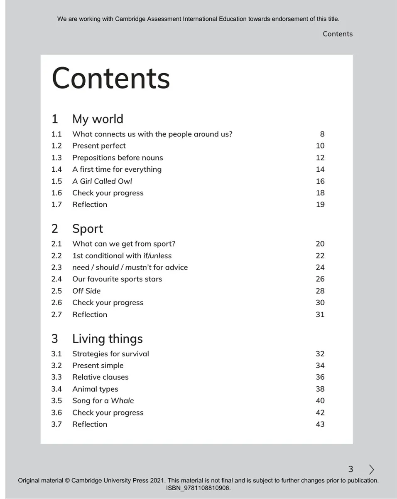
We are working with Cambridge Assessment International Education towards endorsement of this title.
Contents
Contents
1
My world
1.1
What connects us with the people around us?
8
1.2
Present perfect
10
1.3
Prepositions before nouns
12
1.4
A first time for everything
14
1.5
A Girl Called Owl
16
1.6
Check your progress
18
1.7
Reflection
19
2
Sport
2.1
What can we get from sport?
20
2.2
1st conditional with if/unless
22
2.3
need / should / mustn’t for advice
24
2.4
Our favourite sports stars
26
2.5
Off Side
28
2.6
Check your progress
30
2.7
Reflection
31
3
Living things
3.1
Strategies for survival
32
3.2
Present simple
34
3.3
Relative clauses
36
3.4
Animal types
38
3.5
Song for a Whale
40
3.6
Check your progress
42
3.7
Reflection
43
3
Original material © Cambridge University Press 2021. This material is not final and is subject to further changes prior to publication.
ISBN_9781108810906.
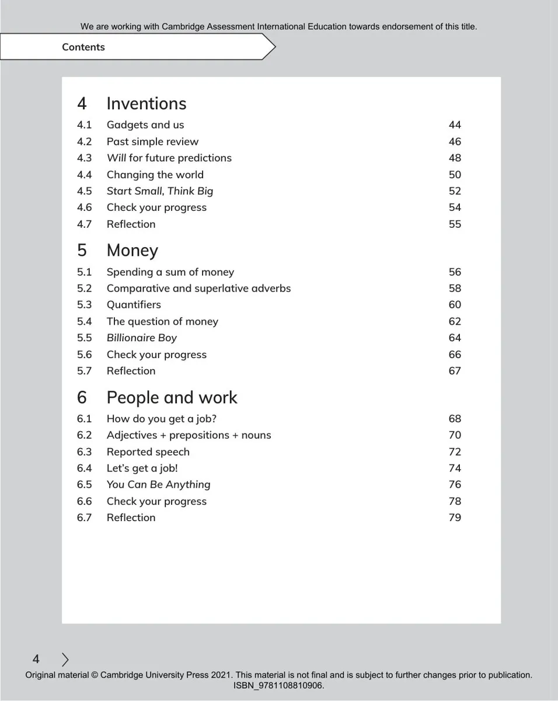
We are working with Cambridge Assessment International Education towards endorsement of this title.
Contents
4
Inventions
4.1
Gadgets and us
44
4.2
Past simple review
46
4.3
Will for future predictions
48
4.4
Changing the world
50
4.5
Start Small, Think Big
52
4.6
Check your progress
54
4.7
Reflection
55
5
Money
5.1
Spending a sum of money
56
5.2
Comparative and superlative adverbs
58
5.3
Quantifiers
60
5.4
The question of money
62
5.5
Billionaire Boy
64
5.6
Check your progress
66
5.7
Reflection
67
6
People and work
6.1
How do you get a job?
68
6.2
Adjectives + prepositions + nouns
70
6.3
Reported speech
72
6.4
Let’s get a job!
74
6.5
You Can Be Anything
76
6.6
Check your progress
78
6.7
Reflection
79
4
Original material © Cambridge University Press 2021. This material is not final and is subject to further changes prior to publication.
ISBN_9781108810906.
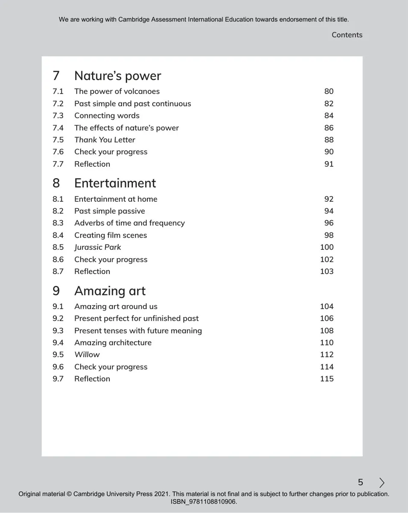
We are working with Cambridge Assessment International Education towards endorsement of this title.
Contents
7
Nature’s power
7.1
The power of volcanoes
80
7.2
Past simple and past continuous
82
7.3
Connecting words
84
7.4
The effects of nature’s power
86
7.5
Thank You Letter
88
7.6
Check your progress
90
7.7
Reflection
91
8
Entertainment
8.1
Entertainment at home
92
8.2
Past simple passive
94
8.3
Adverbs of time and frequency
96
8.4
Creating film scenes
98
8.5
Jurassic Park
100
8.6
Check your progress
102
8.7
Reflection
103
9
Amazing art
9.1
Amazing art around us
104
9.2
Present perfect for unfinished past
106
9.3
Present tenses with future meaning
108
9.4
Amazing architecture
110
9.5
Willow
112
9.6
Check your progress
114
9.7
Reflection
115
5
Original material © Cambridge University Press 2021. This material is not final and is subject to further changes prior to publication.
ISBN_9781108810906.
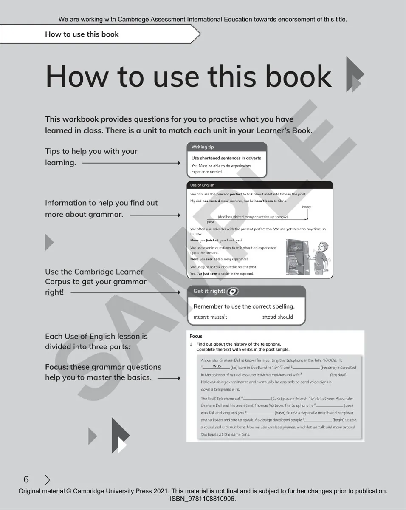
We are working with Cambridge Assessment International Education towards endorsement of this title.
How to use this book
How to use this book
This workbook provides questions for you to practise what you have
learned in class. There is a unit to match each unit in your Learner’s Book.
Writing tip
Tips to help you with your
learning.
Use shortened sentences in adverts
You Must be able to do experiments.
Experience needed …
Use of English
We can use the present perfect to talk about indefinite time in the past.
My dad has visited many countries, but he hasn’t been to China.
today
(dad has visited many countries up to now)
past
We often use adverbs with the present perfect too. We use yet to mean any time up
to now.
Have you fi nished your lunch yet?
We use ever in questions to talk about an experience
up to the present.
Have you ever had a scary experience?
We use just to talk about the recent past.
Yes, I’ve just seen a spider in the cupboard.
Get it right!
Remember to use the correct spelling.
musn’t mustn’t
shoud should
Focus
1 Find out about the history of the telephone.
Complete the text with verbs in the past simple.
Alexander Graham Bell is known for inventing the telephone in the late 1800s. He
was
(be) born in Scotland in 1847 and 2
(become) interested
1
in the science of sound because both his mother and wife 3
(be) deaf.
He loved doing experiments and eventually he was able to send voice signals
down a telephone wire.
The first telephone call 4
(take) place in March 1876 between Alexander
Graham Bell and his assistant Thomas Watson. The telephone he 5
(use)
was tall and long and you 6
(have) to use a separate mouth and ear piece,
one to listen and one to speak. As design developed people 7
(begin) to use
a round dial with numbers. Now we use wireless phones, which let us talk and move around
the house at the same time.
Information to help you find out
more about grammar.
Use the Cambridge Learner
Corpus to get your grammar
right!
Each Use of English lesson is
divided into three parts:
Focus: these grammar questions
help you to master the basics.
6
Original material © Cambridge University Press 2021. This material is not final and is subject to further changes prior to publication.
ISBN_9781108810906.
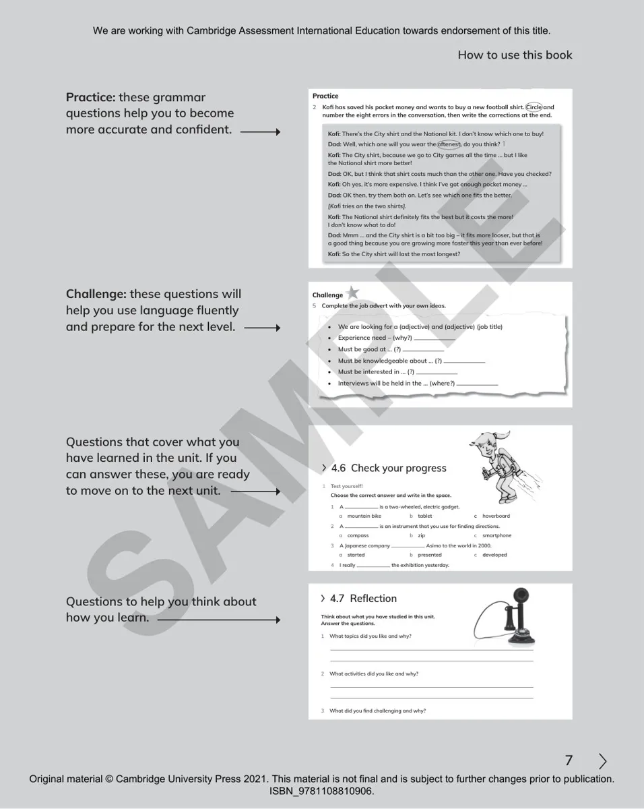
We are working with Cambridge Assessment International Education towards endorsement of this title.
How to use this book
Practice: these grammar
questions help you to become
more accurate and confident.
Challenge: these questions will
help you use language fluently
and prepare for the next level.
Practice
2 Kofi has saved his pocket money and wants to buy a new football shirt. Circle and
number the eight errors in the conversation, then write the corrections at the end.
Kofi: There’s the City shirt and the National kit. I don’t know which one to buy!
Dad: Well, which one will you wear the oftenest, do you think? 1
Kofi: The City shirt, because we go to City games all the time … but I like
the National shirt more better!
Dad: OK, but I think that shirt costs much than the other one. Have you checked?
Kofi: Oh yes, it’s more expensive. I think I’ve got enough pocket money …
Dad: OK then, try them both on. Let’s see which one fits the better.
[Kofi tries on the two shirts].
Kofi: The National shirt definitely fits the best but it costs the more!
I don’t know what to do!
Dad: Mmm … and the City shirt is a bit too big – it fits more looser, but that is
a good thing because you are growing more faster this year than ever before!
Kofi: So the City shirt will last the most longest?
Challenge
5 Complete the job advert with your own ideas.
•
We are looking for a (adjective) and (adjective) (job title)
•
Experience need – (why?)
•
Must be good at … (?)
Overset
•
Must be knowledgeable about … (?)
•
Must be interested in … (?)
•
Interviews will be held in the … (where?)
75
Questions that cover what you
have learned in the unit. If you
can answer these, you are ready
to move on to the next unit.
Questions to help you think about
how you learn.
4 Inventions
4.6 Check your progress
1 Test yourself!
Choose the correct answer and write in the space.
1
A
is a two-wheeled, electric gadget.
a mountain bike
b tablet
c
hoverboard
2
A
is an instrument that you use for finding directions.
a compass
b zip
c
smartphone
3
A Japanese company
Asimo to the world in 2000.
a started
b presented
c
developed
4
I really
the exhibition yesterday.
4.7 Reflection
Think about what you have studied in this unit.
Answer the questions.
1 What topics did you like and why?
2 What activities did you like and why?
3 What did you fi nd challenging and why?
7
Original material © Cambridge University Press 2021. This material is not final and is subject to further changes prior to publication.
ISBN_9781108810906.
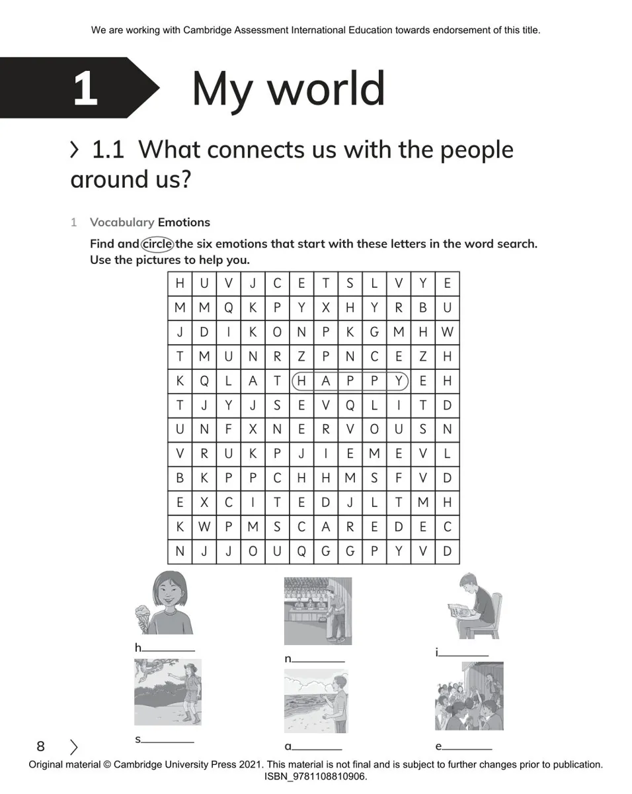
We are working with Cambridge Assessment International Education towards endorsement of this title.
1
My world
1.1 What connects us with the people
around us?
1 Vocabulary Emotions
Find and circle the six emotions that start with these letters in the word search.
Use the pictures to help you.
H
U
V
J
C
E
T
S
L
V
Y
E
M
M
Q
K
P
Y
X
H
Y
R
B
U
J
D
I
K
O
N
P
K
G
M
H
W
T
M
U
N
R
Z
P
N
C
E
Z
H
K
Q
L
A
T
H
A
P
P
Y
E
H
T
J
Y
J
S
E
V
Q
L
I
T
D
U
N
F
X
N
E
R
V
O
U
S
N
V
R
U
K
P
J
I
E
M
E
V
L
B
K
P
P
C
H
H
M
S
F
V
D
E
X
C
I
T
E
D
J
L
T
M
H
K
W
P
M
S
C
A
R
E
D
E
C
N
J
J
O
U
Q
G
G
P
Y
V
D
h
i
n
s
8
e
a
Original material © Cambridge University Press 2021. This material is not final and is subject to further changes prior to publication.
ISBN_9781108810906.
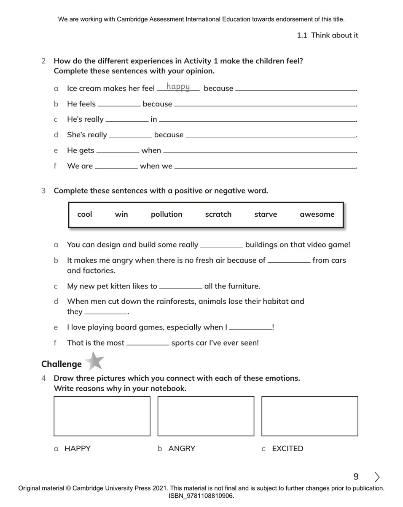
We are working with Cambridge Assessment International Education towards endorsement of this title.
1.1 Think about it
2 How do the different experiences in Activity 1 make the children feel?
Complete these sentences with your opinion.
happy
a
Ice cream makes her feel
because
.
b
He feels
because
.
c
He’s really
in
.
d
She’s really
because
.
e
He gets
when
.
f
We are
when we
.
3 Complete these sentences with a positive or negative word.
cool win pollution scratch starve awesome
a
You can design and build some really
buildings on that video game!
b
It makes me angry when there is no fresh air because of
from cars
and factories.
c
My new pet kitten likes to
all the furniture.
d
When men cut down the rainforests, animals lose their habitat and
they
.
e
I love playing board games, especially when I
!
f
That is the most
sports car I’ve ever seen!
Challenge
4 Draw three pictures which you connect with each of these emotions.
Write reasons why in your notebook.
a HAPPY
b ANGRY
c EXCITED
9
Original material © Cambridge University Press 2021. This material is not final and is subject to further changes prior to publication.
ISBN_9781108810906.
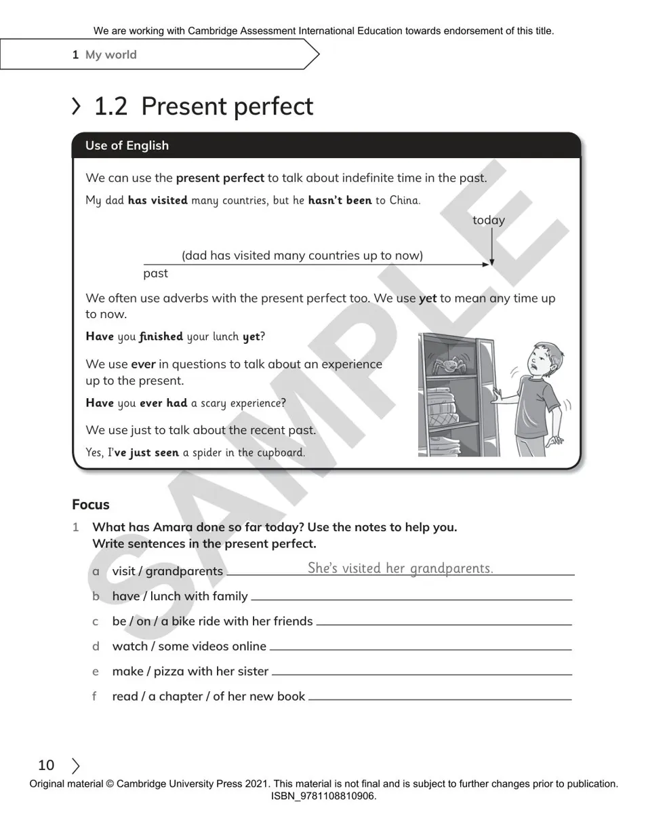
We are working with Cambridge Assessment International Education towards endorsement of this title.
1 My world
1.2 Present perfect
Use of English
We can use the present perfect to talk about indefinite time in the past.
My dad has visited many countries, but he hasn’t been to China.
today
(dad has visited many countries up to now)
past
We often use adverbs with the present perfect too. We use yet to mean any time up
to now.
Have you fi nished your lunch yet?
We use ever in questions to talk about an experience
up to the present.
Have you ever had a scary experience?
We use just to talk about the recent past.
Yes, I’ve just seen a spider in the cupboard.
Focus
1 What has Amara done so far today? Use the notes to help you.
Write sentences in the present perfect.
She’s visited her grandparents.
a visit / grandparents
b have / lunch with family
c
be / on / a bike ride with her friends
d watch / some videos online
e
make / pizza with her sister
f
read / a chapter / of her new book
10
Original material © Cambridge University Press 2021. This material is not final and is subject to further changes prior to publication.
ISBN_9781108810906.
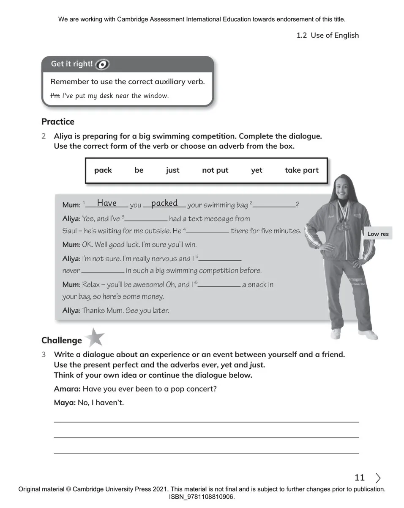
We are working with Cambridge Assessment International Education towards endorsement of this title.
1.2 Use of English
Get it right!
Remember to use the correct auxiliary verb.
I’m I’ve put my desk near the window.
Practice
2 Aliya is preparing for a big swimming competition. Complete the dialogue.
Use the correct form of the verb or choose an adverb from the box.
pack be just not put yet take part
Have
packed
Mum:1
you
your swimming bag 2
?
Aliya: Yes, and I’ve 3
had a text message from
Saul – he’s waiting for me outside. He 4
there for five minutes.
Mum: OK. Well good luck. I’m sure you’ll win.
Aliya: I’m not sure. I’m really nervous and I 5
never
in such a big swimming competition before.
Mum: Relax – you’ll be awesome! Oh, and I 6
a snack in
your bag, so here’s some money.
Aliya: Thanks Mum. See you later.
Challenge
3 Write a dialogue about an experience or an event between yourself and a friend.
Use the present perfect and the adverbs ever, yet and just.
Think of your own idea or continue the dialogue below.
Amara: Have you ever been to a pop concert?
Maya: No, I haven’t.
Low res
11
Original material © Cambridge University Press 2021. This material is not final and is subject to further changes prior to publication.
ISBN_9781108810906.
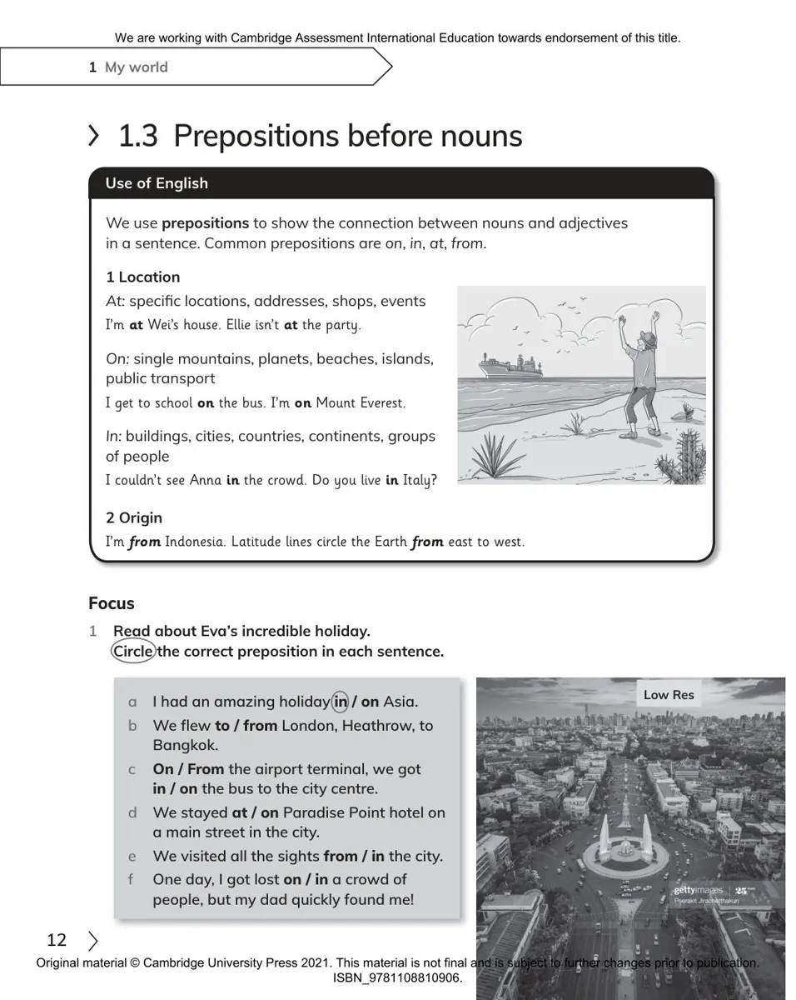
We are working with Cambridge Assessment International Education towards endorsement of this title.
1 My world
1.3 Prepositions before nouns
Use of English
We use prepositions to show the connection between nouns and adjectives
in a sentence. Common prepositions are on, in, at, from.
1 Location
At: specifi c locations, addresses, shops, events
I’m at Wei’s house. Ellie isn’t at the party.
On: single mountains, planets, beaches, islands,
public transport
I get to school on the bus. I’m on Mount Everest.
In: buildings, cities, countries, continents, groups
of people
I couldn’t see Anna in the crowd. Do you live in Italy?
2 Origin
I’m from Indonesia. Latitude lines circle the Earth from east to west.
Focus
1 Read about Eva’s incredible holiday.
Circle the correct preposition in each sentence.
a I had an amazing holiday in / on Asia.
b We flew to / from London, Heathrow, to
Bangkok.
c
On / From the airport terminal, we got
in / on the bus to the city centre.
d We stayed at / on Paradise Point hotel on
a main street in the city.
We visited all the sights from / in the city.
e
f
One day, I got lost on / in a crowd of
people, but my dad quickly found me!
12
Original material © Cambridge University Press 2021. This material is not final and is subject to further changes prior to publication.
ISBN_9781108810906.
Low Res
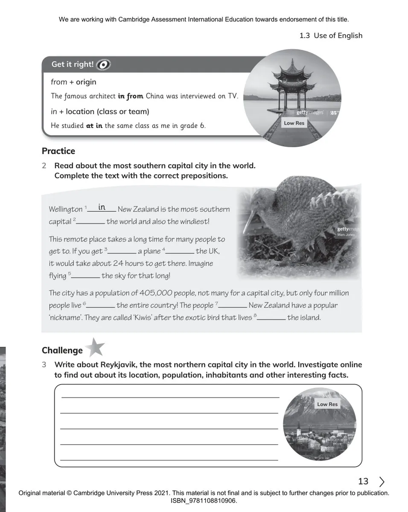
We are working with Cambridge Assessment International Education towards endorsement of this title.
1.3 Use of English
Get it right!
from + origin
The famous architect in from China was interviewed on TV.
in + location (class or team)
He studied at in the same class as me in grade 6.
Practice
2 Read about the most southern capital city in the world.
Complete the text with the correct prepositions.
in
Wellington 1
New Zealand is the most southern
capital 2
the world and also the windiest!
This remote place takes a long time for many people to
get to. If you get 3
a plane 4
the UK,
it would take about 24 hours to get there. Imagine
flying 5
the sky for that long!
The city has a population of 405,000 people, not many for a capital city, but only four million
people live 6
the entire country! The people 7
New Zealand have a popular
‘nickname’. They are called ‘Kiwis’ after the exotic bird that lives 8
the island.
Challenge
3 Write about Reykjavik, the most northern capital city in the world. Investigate online
to find out about its location, population, inhabitants and other interesting facts.
Low Res
Low Res
13
Original material © Cambridge University Press 2021. This material is not final and is subject to further changes prior to publication.
ISBN_9781108810906.
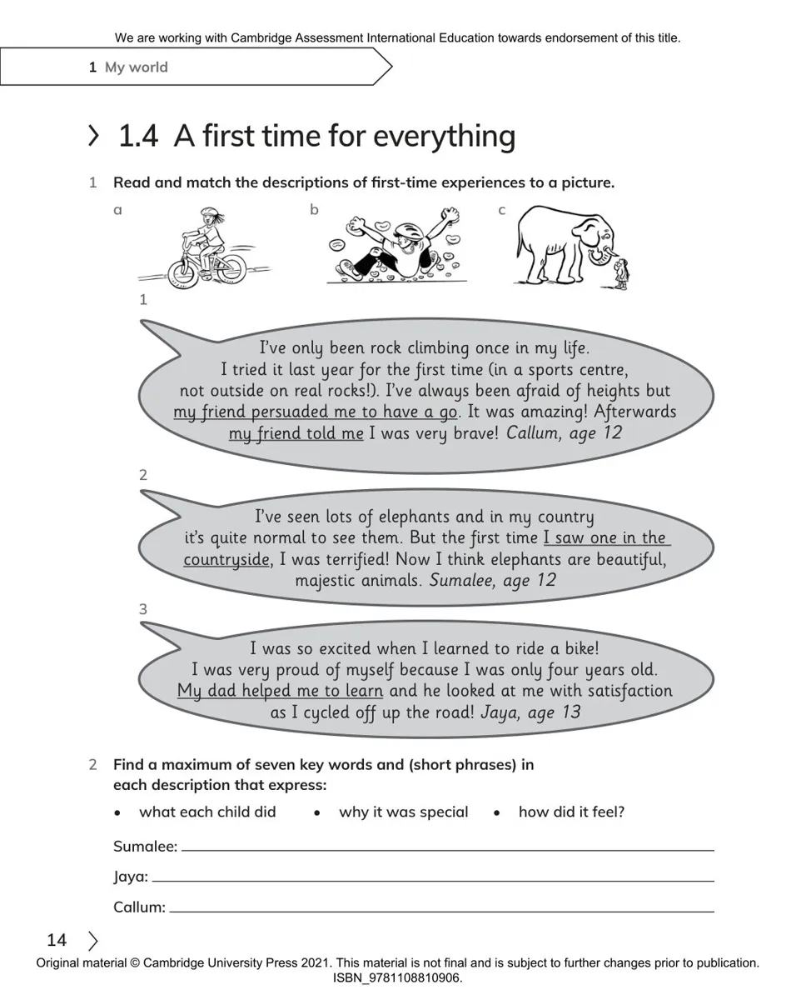
We are working with Cambridge Assessment International Education towards endorsement of this title.
1 My world
1.4 A first time for everything
1 Read and match the descriptions of first-time experiences to a picture.
b
c
a
1
I’ve only been rock climbing once in my life.
I tried it last year for the first time (in a sports centre,
not outside on real rocks!). I’ve always been afraid of heights but
my friend persuaded me to have a go. It was amazing! Afterwards
my friend told me I was very brave! Callum, age 12
2
I’ve seen lots of elephants and in my country
it’s quite normal to see them. But the first time I saw one in the
countryside, I was terrified! Now I think elephants are beautiful,
majestic animals. Sumalee, age 12
I was so excited when I learned to ride a bike!
I was very proud of myself because I was only four years old.
My dad helped me to learn and he looked at me with satisfaction
as I cycled off up the road! Jaya, age 13
2 Find a maximum of seven key words and (short phrases) in
each description that express:
• what each child did
• why it was special
• how did it feel?
Sumalee:
Jaya:
Callum:
14
Original material © Cambridge University Press 2021. This material is not final and is subject to further changes prior to publication.
ISBN_9781108810906.
3
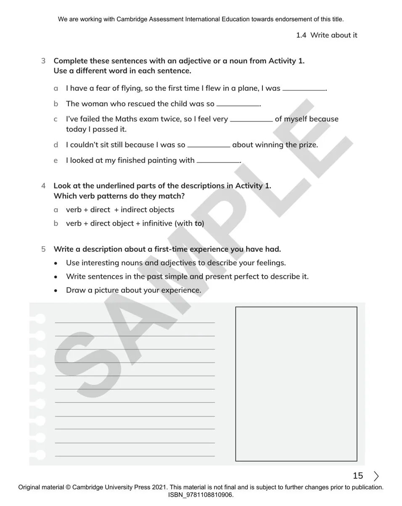
We are working with Cambridge Assessment International Education towards endorsement of this title.
1.4 Write about it
3 Complete these sentences with an adjective or a noun from Activity 1.
Use a different word in each sentence.
aI have a fear of flying, so the first time I flew in a plane, I was
.
bThe woman who rescued the child was so
.
c
I’ve failed the Maths exam twice, so I feel very
of myself because
today I passed it.
dI couldn’t sit still because I was so
about winning the prize.
e
I looked at my finished painting with
.
4 Look at the underlined parts of the descriptions in Activity 1.
Which verb patterns do they match?
averb + direct + indirect objects
bverb + direct object + infinitive (with to)
5 Write a description about a first-time experience you have had.
•
Use interesting nouns and adjectives to describe your feelings.
•
Write sentences in the past simple and present perfect to describe it.
•
Draw a picture about your experience.
15
Original material © Cambridge University Press 2021. This material is not final and is subject to further changes prior to publication.
ISBN_9781108810906.
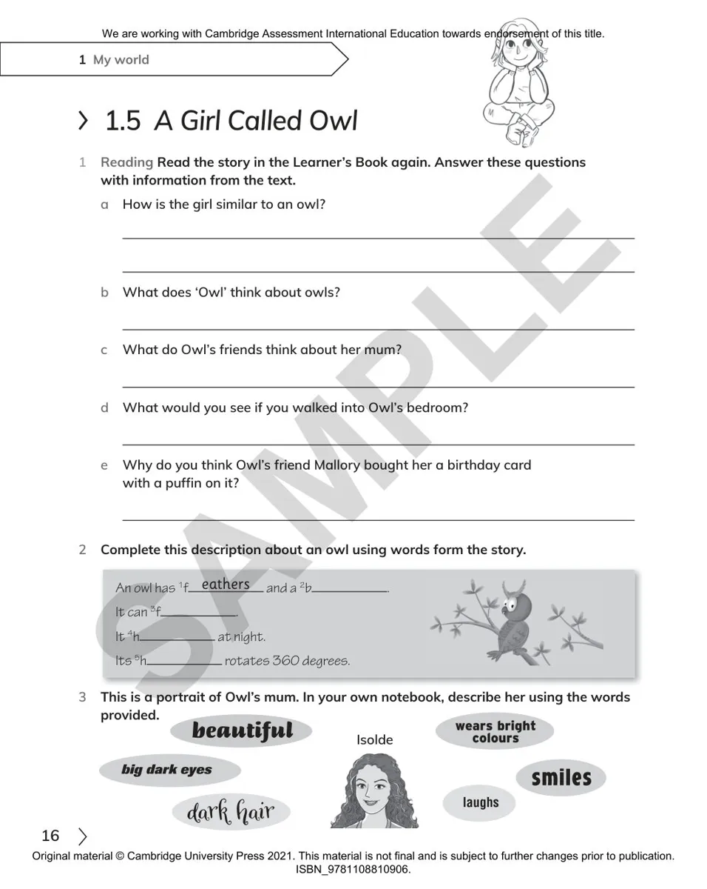
We are working with Cambridge Assessment International Education towards endorsement of this title.
1 My world
1.5 A Girl Called Owl
1 Reading Read the story in the Learner’s Book again. Answer these questions
with information from the text.
a How is the girl similar to an owl?
b What does ‘Owl’ think about owls?
c
What do Owl’s friends think about her mum?
d What would you see if you walked into Owl’s bedroom?
e
Why do you think Owl’s friend Mallory bought her a birthday card
with a puffin on it?
2 Complete this description about an owl using words form the story.
eathers
An owl has 1f
and a 2b
.
It can 3f
.
It 4h
at night.
Its 5h
rotates 360 degrees.
3 This is a portrait of Owl’s mum. In your own notebook, describe her using the words
provided.
Isolde
16
Original material © Cambridge University Press 2021. This material is not final and is subject to further changes prior to publication.
ISBN_9781108810906.
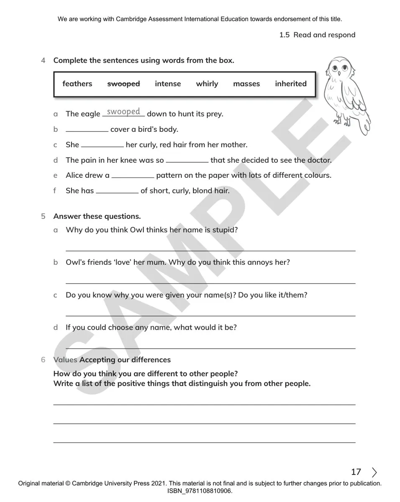
We are working with Cambridge Assessment International Education towards endorsement of this title.
1.5 Read and respond
4 Complete the sentences using words from the box.
feathers swooped intense whirly masses inherited
swooped
a The eagle
down to hunt its prey.
b
cover a bird’s body.
c
She
her curly, red hair from her mother.
d The pain in her knee was so
that she decided to see the doctor.
e
Alice drew a
pattern on the paper with lots of different colours.
f
She has
of short, curly, blond hair.
5 Answer these questions.
a Why do you think Owl thinks her name is stupid?
b Owl’s friends ‘love’ her mum. Why do you think this annoys her?
c
Do you know why you were given your name(s)? Do you like it/them?
d If you could choose any name, what would it be?
6 Values Accepting our differences
How do you think you are different to other people?
Write a list of the positive things that distinguish you from other people.
17
Original material © Cambridge University Press 2021. This material is not final and is subject to further changes prior to publication.
ISBN_9781108810906.
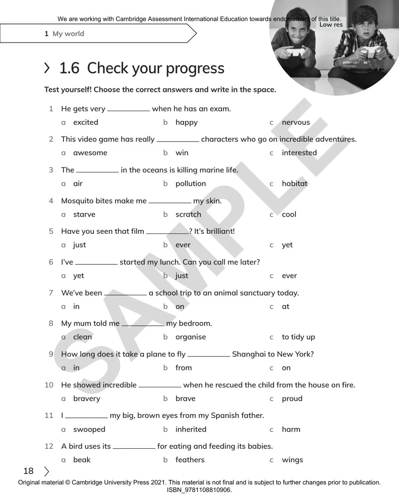
We are working with Cambridge Assessment International Education towards endorsement of this title.
Low res
1 My world
1.6 Check your progress
Test yourself! Choose the correct answers and write in the space.
1 He gets very
when he has an exam.
aexcited
bhappy
c
nervous
2 This video game has really
characters who go on incredible adventures.
aawesome
bwin
c
interested
3 The
in the oceans is killing marine life.
aair
bpollution
c
habitat
4 Mosquito bites make me
my skin.
astarve
bscratch
c
cool
5 Have you seen that film
? It’s brilliant!
ajust
bever
c
yet
6 I’ve
started my lunch. Can you call me later?
ayet
bjust
c
ever
7 We’ve been
a school trip to an animal sanctuary today.
ain
bon
c
at
8 My mum told me
my bedroom.
aclean
borganise
c
to tidy up
9 How long does it take a plane to fly
Shanghai to New York?
ain
bfrom
c
on
10 He showed incredible
when he rescued the child from the house on fire.
abravery
bbrave
c
proud
11 I
my big, brown eyes from my Spanish father.
aswooped
binherited
c
harm
12 A bird uses its
for eating and feeding its babies.
abeak
bfeathers
c
wings
18
Original material © Cambridge University Press 2021. This material is not final and is subject to further changes prior to publication.
ISBN_9781108810906.
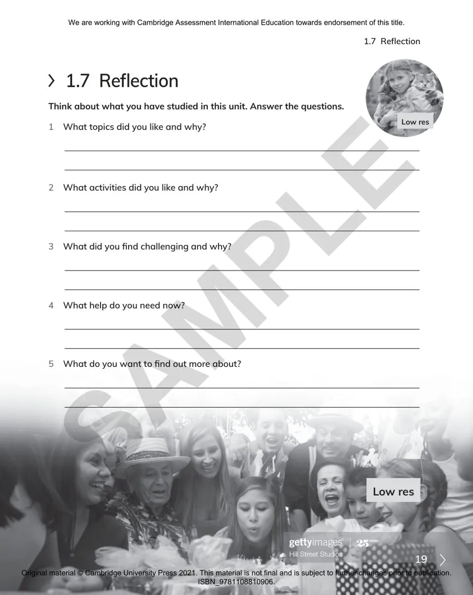
We are working with Cambridge Assessment International Education towards endorsement of this title.
1.7 Refl ection
1.7 Reflection
Think about what you have studied in this unit. Answer the questions.
1 What topics did you like and why?
Low res
2 What activities did you like and why?
3 What did you fi nd challenging and why?
4 What help do you need now?
5 What do you want to fi nd out more about?
Low res
19
Original material © Cambridge University Press 2021. This material is not final and is subject to further changes prior to publication.
ISBN_9781108810906.
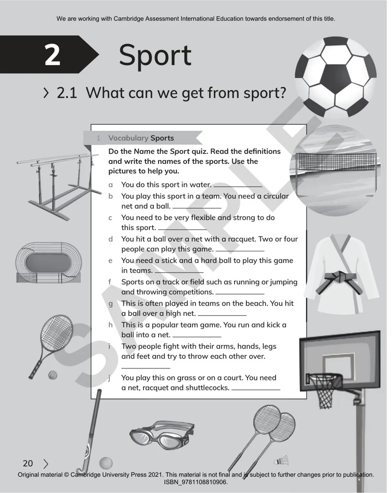
We are working with Cambridge Assessment International Education towards endorsement of this title.
2
Sport
2.1 What can we get from sport?
1 Vocabulary Sports
Do the Name the Sport quiz. Read the defi nitions
and write the names of the sports. Use the
pictures to help you.
a
You do this sport in water.
b
You play this sport in a team. You need a circular
net and a ball.
c
You need to be very flexible and strong to do
this sport.
d
You hit a ball over a net with a racquet. Two or four
people can play this game.
ur
e
You need a stick and a hard ball to play this game
in teams.
e
f
Sports on a track or field such as running or jumping
and throwing competitions.
g
g
This is often played in teams on the beach. You hit
a ball over a high net.
t
h
This is a popular team game. You run and kick a
ball into a net.
i
Two people fight with their arms, hands, legs
and feet and try to throw each other over.
j
You play this on grass or on a court. You need
a net, racquet and shuttlecocks.
20
Original material © Cambridge University Press 2021. This material is not final and is subject to further changes prior to publication.
ISBN_9781108810906.
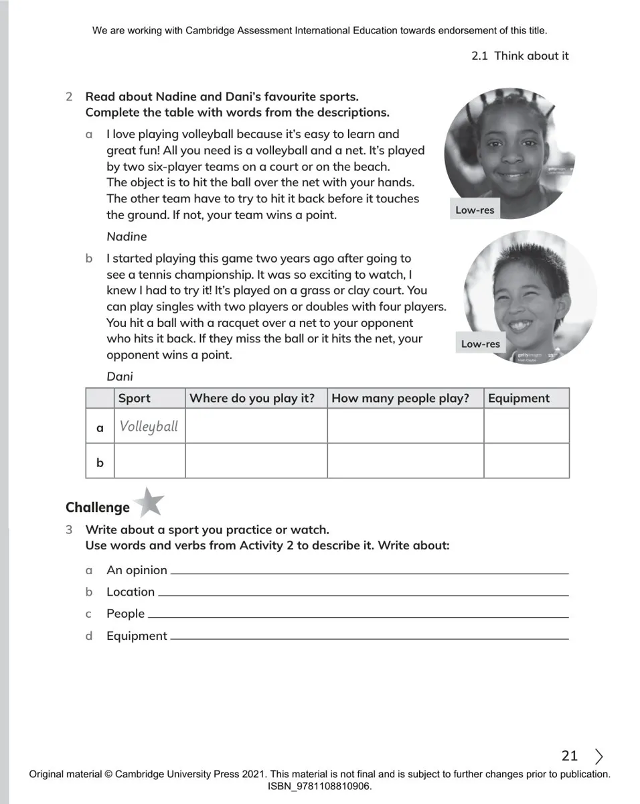
We are working with Cambridge Assessment International Education towards endorsement of this title.
2.1 Think about it
2 Read about Nadine and Dani’s favourite sports.
Complete the table with words from the descriptions.
a
I love playing volleyball because it’s easy to learn and
great fun! All you need is a volleyball and a net. It’s played
by two six-player teams on a court or on the beach.
The object is to hit the ball over the net with your hands.
The other team have to try to hit it back before it touches
the ground. If not, your team wins a point.
Nadine
b
I started playing this game two years ago after going to
see a tennis championship. It was so exciting to watch, I
knew I had to try it! It’s played on a grass or clay court. You
can play singles with two players or doubles with four players.
You hit a ball with a racquet over a net to your opponent
who hits it back. If they miss the ball or it hits the net, your
opponent wins a point.
Low-res
Dani
Sport
Where do you play it?
How many people play?
Equipment
Volleyball
a
b
Challenge
3 Write about a sport you practice or watch.
Use words and verbs from Activity 2 to describe it. Write about:
a
An opinion
b
Location
c
People
d
Equipment
Low-res
21
Original material © Cambridge University Press 2021. This material is not final and is subject to further changes prior to publication.
ISBN_9781108810906.
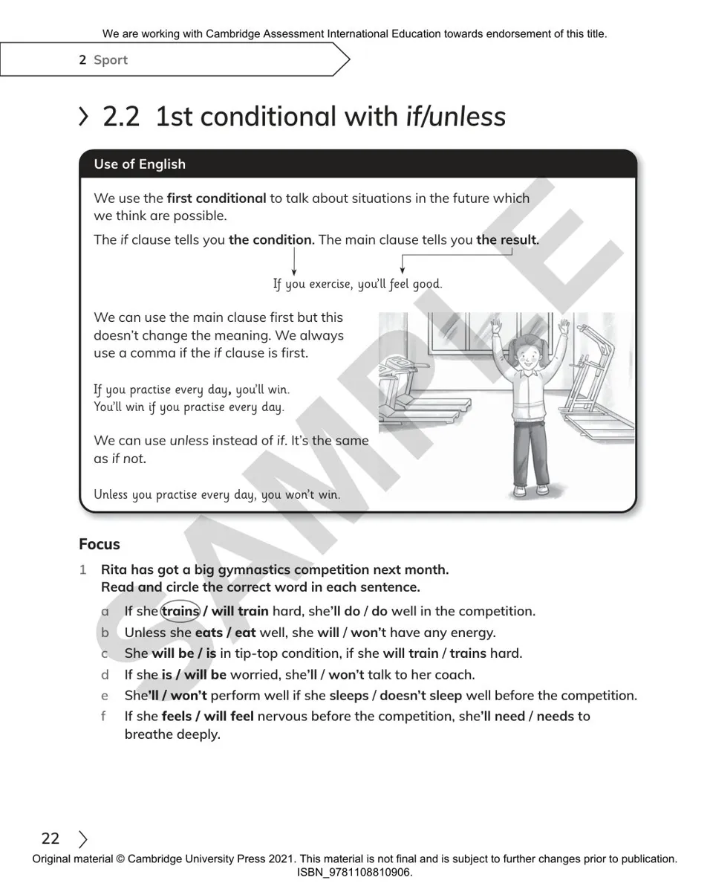
We are working with Cambridge Assessment International Education towards endorsement of this title.
2 Sport
2.2 1st conditional with if/unless
Use of English
We use the first conditional to talk about situations in the future which
we think are possible.
The if clause tells you the condition. The main clause tells you the result.
If you exercise, you’ll feel good.
We can use the main clause first but this
doesn’t change the meaning. We always
use a comma if the if clause is first.
If you practise every day, you’ll win.
You’ll win if you practise every day.
We can use unless instead of if. It’s the same
as if not.
Unless you practise every day, you won’t win.
Focus
1 Rita has got a big gymnastics competition next month.
Read and circle the correct word in each sentence.
If she trains / will train hard, she’ll do / do well in the competition.
a
b
Unless she eats / eat well, she will / won’t have any energy.
c
She will be / is in tip-top condition, if she will train / trains hard.
If she is / will be worried, she’ll / won’t talk to her coach.
d
e
She’ll / won’t perform well if she sleeps / doesn’t sleep well before the competition.
If she feels / will feel nervous before the competition, she’ll need / needs to
f
breathe deeply.
22
Original material © Cambridge University Press 2021. This material is not final and is subject to further changes prior to publication.
ISBN_9781108810906.
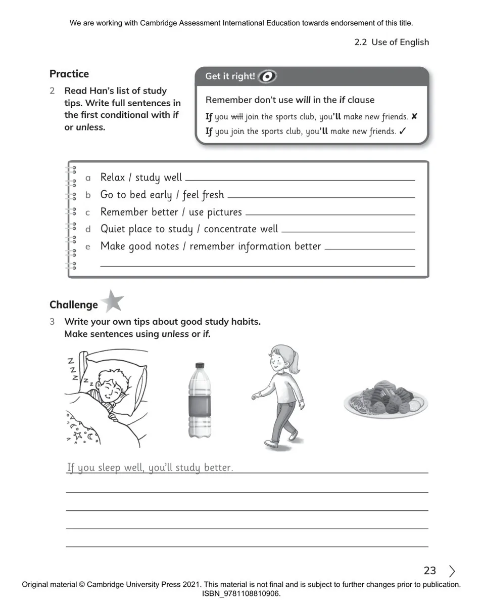
We are working with Cambridge Assessment International Education towards endorsement of this title.
2.2 Use of English
Practice
2 Read Han’s list of study
tips. Write full sentences in
the fi rst conditional with if
or unless.
Get it right!
Remember don’t use will in the if clause
If you will join the sports club, you’ll make new friends. ✘
If you join the sports club, you’ll make new friends. ✓
a Relax / study well
b Go to bed early / feel fresh
c Remember better / use pictures
d Quiet place to study / concentrate well
e Make good notes / remember information better
Challenge
3 Write your own tips about good study habits.
Make sentences using unless or if.
If you sleep well, you’ll study better.
23
Original material © Cambridge University Press 2021. This material is not final and is subject to further changes prior to publication.
ISBN_9781108810906.
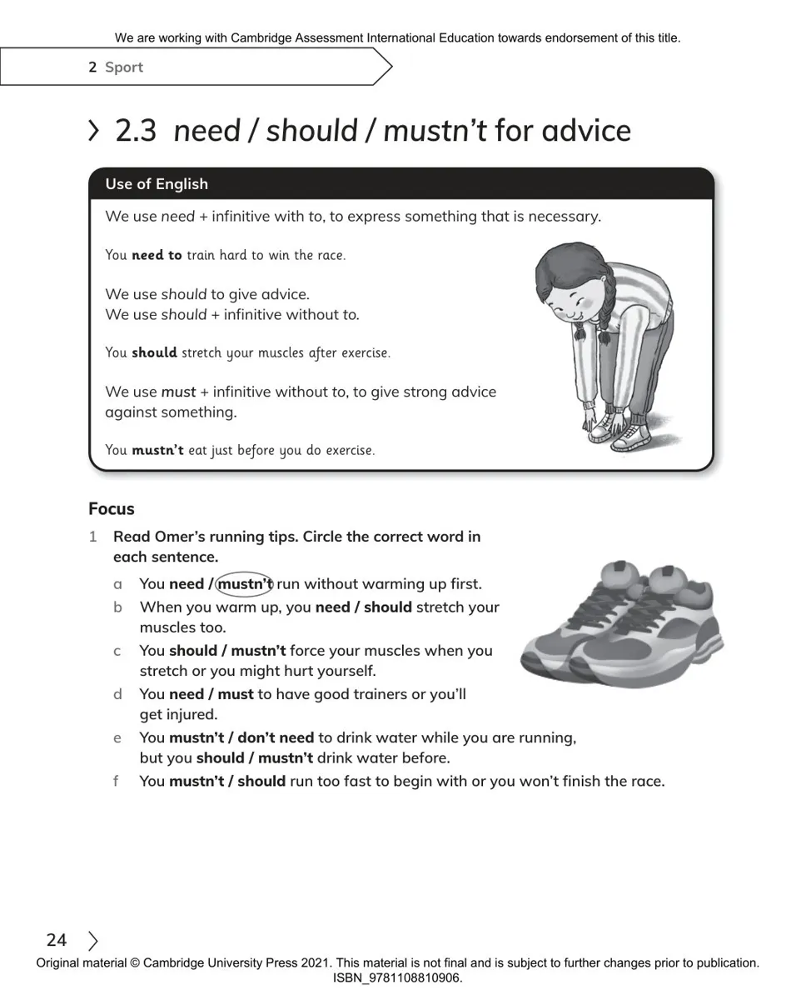
We are working with Cambridge Assessment International Education towards endorsement of this title.
2 Sport
2.3 need / should / mustn’t for advice
Use of English
We use need + infinitive with to, to express something that is necessary.
You need to train hard to win the race.
We use should to give advice.
We use should + infinitive without to.
You should stretch your muscles after exercise.
We use must + infinitive without to, to give strong advice
against something.
You mustn’t eat just before you do exercise.
Focus
1 Read Omer’s running tips. Circle the correct word in
each sentence.
You need / mustn’t run without warming up first.
a
b
When you warm up, you need / should stretch your
muscles too.
c
You should / mustn’t force your muscles when you
stretch or you might hurt yourself.
You need / must to have good trainers or you’ll
d
get injured.
e
You mustn’t / don’t need to drink water while you are running,
but you should / mustn’t drink water before.
You mustn’t / should run too fast to begin with or you won’t finish the race.
f
24
Original material © Cambridge University Press 2021. This material is not final and is subject to further changes prior to publication.
ISBN_9781108810906.
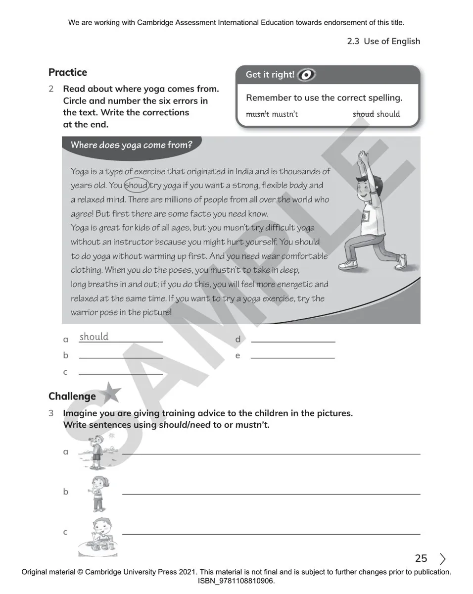
We are working with Cambridge Assessment International Education towards endorsement of this title.
2.3 Use of English
Practice
2 Read about where yoga comes from.
Circle and number the six errors in
the text. Write the corrections
at the end.
Where does yoga come from?
Yoga is a type of exercise that originated in India and is thousands of
years old. You shoud try yoga if you want a strong, flexible body and
a relaxed mind. There are millions of people from all over the world who
agree! But first there are some facts you need know.
Yoga is great for kids of all ages, but you musn’t try difficult yoga
without an instructor because you might hurt yourself. You should
to do yoga without warming up first. And you need wear comfortable
clothing. When you do the poses, you mustn’t to take in deep,
long breaths in and out; if you do this, you will feel more energetic and
relaxed at the same time. If you want to try a yoga exercise, try the
warrior pose in the picture!
should
a
d
b
e
c
Challenge
3 Imagine you are giving training advice to the children in the pictures.
Write sentences using should/need to or mustn’t.
a
b
c
25
Original material © Cambridge University Press 2021. This material is not final and is subject to further changes prior to publication.
ISBN_9781108810906.
Get it right!
Remember to use the correct spelling.
musn’t mustn’t
shoud should
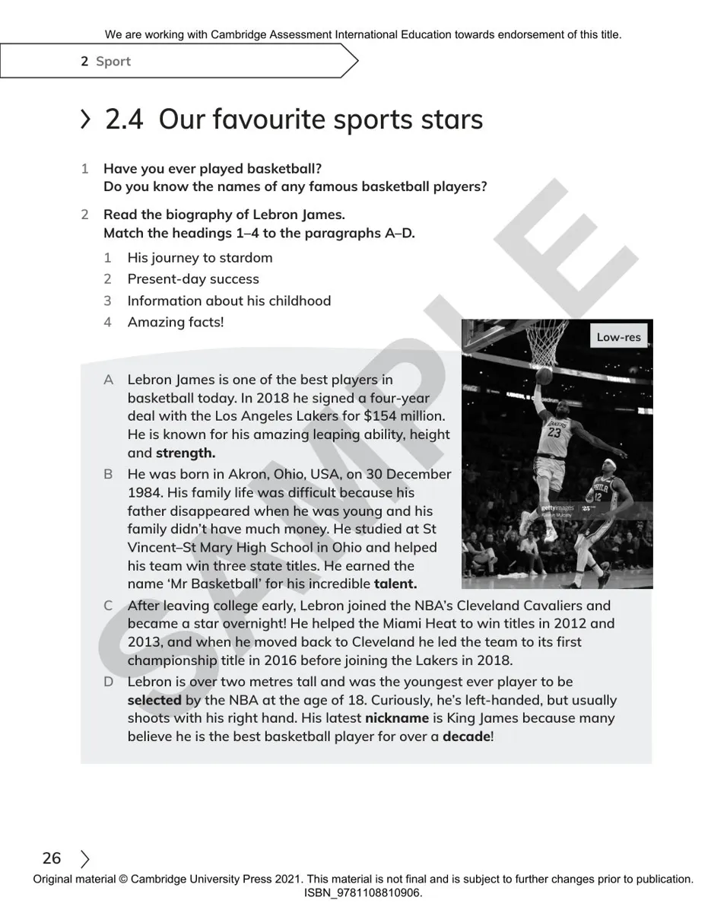
We are working with Cambridge Assessment International Education towards endorsement of this title.
2 Sport
2.4 Our favourite sports stars
1 Have you ever played basketball?
Do you know the names of any famous basketball players?
2 Read the biography of Lebron James.
Match the headings 1–4 to the paragraphs A–D.
1
His journey to stardom
2
Present-day success
3
Information about his childhood
4
Amazing facts!
A Lebron James is one of the best players in
basketball today. In 2018 he signed a four-year
deal with the Los Angeles Lakers for $154 million.
He is known for his amazing leaping ability, height
and strength.
B
He was born in Akron, Ohio, USA, on 30 December
1984. His family life was difficult because his
father disappeared when he was young and his
family didn’t have much money. He studied at St
Vincent–St Mary High School in Ohio and helped
his team win three state titles. He earned the
name ‘Mr Basketball’ for his incredible talent.
C
After leaving college early, Lebron joined the NBA’s Cleveland Cavaliers and
became a star overnight! He helped the Miami Heat to win titles in 2012 and
2013, and when he moved back to Cleveland he led the team to its first
championship title in 2016 before joining the Lakers in 2018.
D Lebron is over two metres tall and was the youngest ever player to be
selectedby the NBA at the age of 18. Curiously, he’s left-handed, but usually
shoots with his right hand. His latest nicknameis King James because many
believe he is the best basketball player for over a decade!
Low-res
26
Original material © Cambridge University Press 2021. This material is not final and is subject to further changes prior to publication.
ISBN_9781108810906.
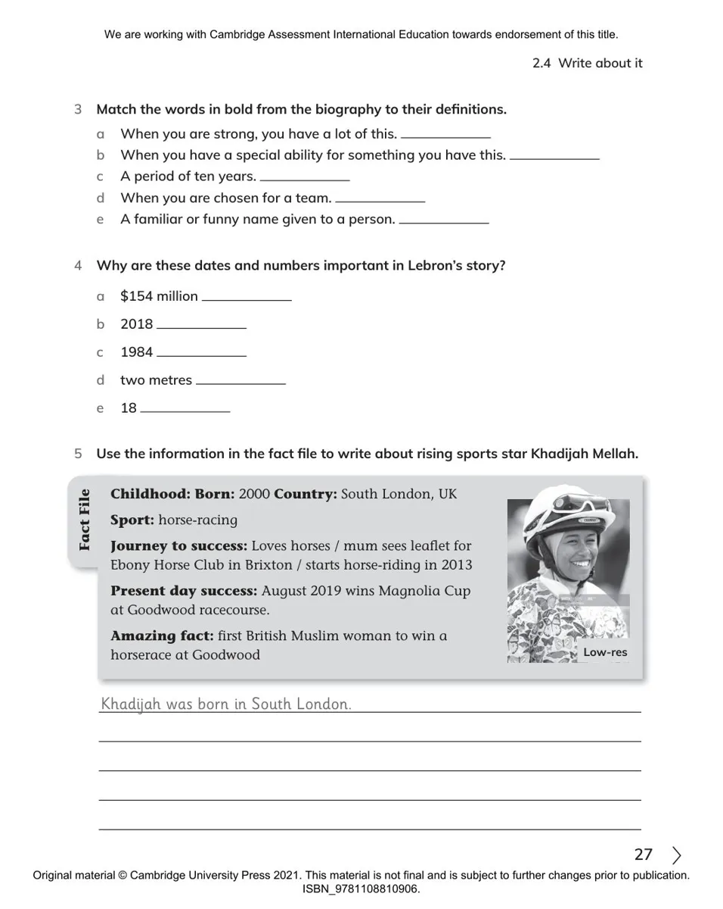
We are working with Cambridge Assessment International Education towards endorsement of this title.
2.4 Write about it
3 Match the words in bold from the biography to their defi nitions.
a
When you are strong, you have a lot of this.
b
When you have a special ability for something you have this.
c
A period of ten years.
d
When you are chosen for a team.
e
A familiar or funny name given to a person.
4 Why are these dates and numbers important in Lebron’s story?
a
$154 million
b
2018
c
1984
d
two metres
e
18
5 Use the information in the fact fi le to write about rising sports star Khadijah Mellah.
Childhood: Born: 2000 Country: South London, UK
Fact File
Sport: horse-racing
Journey to success: Loves horses / mum sees leaflet for
Ebony Horse Club in Brixton / starts horse-riding in 2013
Present day success: August 2019 wins Magnolia Cup
at Goodwood racecourse.
Amazing fact: first British Muslim woman to win a
horserace at Goodwood
Khadijah was born in South London.
Low-res
27
Original material © Cambridge University Press 2021. This material is not final and is subject to further changes prior to publication.
ISBN_9781108810906.
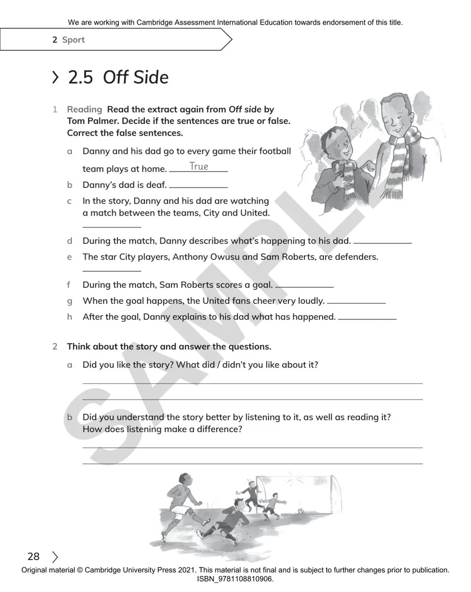
We are working with Cambridge Assessment International Education towards endorsement of this title.
2 Sport
2.5 Off Side
1 Reading Read the extract again from Off side by
Tom Palmer. Decide if the sentences are true or false.
Correct the false sentences.
a
Danny and his dad go to every game their football
True
team plays at home.
b
Danny’s dad is deaf.
c
In the story, Danny and his dad are watching
a match between the teams, City and United.
d
During the match, Danny describes what’s happening to his dad.
e
The star City players, Anthony Owusu and Sam Roberts, are defenders.
f
During the match, Sam Roberts scores a goal.
g
When the goal happens, the United fans cheer very loudly.
h
After the goal, Danny explains to his dad what has happened.
2 Think about the story and answer the questions.
a
Did you like the story? What did / didn’t you like about it?
b
Did you understand the story better by listening to it, as well as reading it?
How does listening make a difference?
28
Original material © Cambridge University Press 2021. This material is not final and is subject to further changes prior to publication.
ISBN_9781108810906.
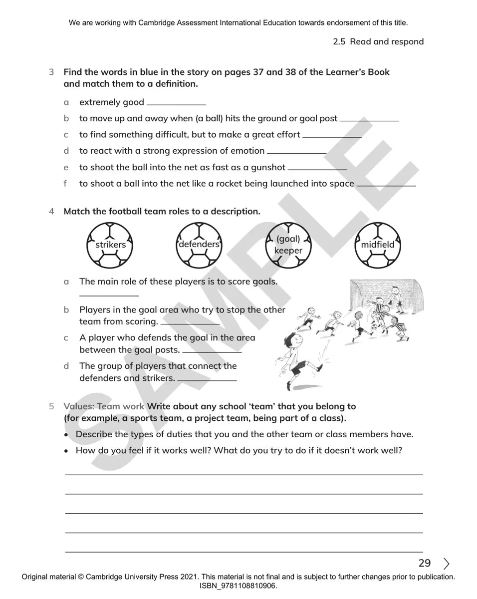
We are working with Cambridge Assessment International Education towards endorsement of this title.
2.5 Read and respond
3 Find the words in blue in the story on pages 37 and 38 of the Learner’s Book
and match them to a definition.
a
extremely good
b
to move up and away when (a ball) hits the ground or goal post
c
to find something difficult, but to make a great effort
d
to react with a strong expression of emotion
e
to shoot the ball into the net as fast as a gunshot
f
to shoot a ball into the net like a rocket being launched into space
4 Match the football team roles to a description.
(goal)
defenders
strikers
midfield
keeper
a
The main role of these players is to score goals.
b
Players in the goal area who try to stop the other
team from scoring.
c
A player who defends the goal in the area
between the goal posts.
d
The group of players that connect the
defenders and strikers.
5 Values: Team work Write about any school ‘team’ that you belong to
(for example, a sports team, a project team, being part of a class).
• Describe the types of duties that you and the other team or class members have.
• How do you feel if it works well? What do you try to do if it doesn’t work well?
29
Original material © Cambridge University Press 2021. This material is not final and is subject to further changes prior to publication.
ISBN_9781108810906.
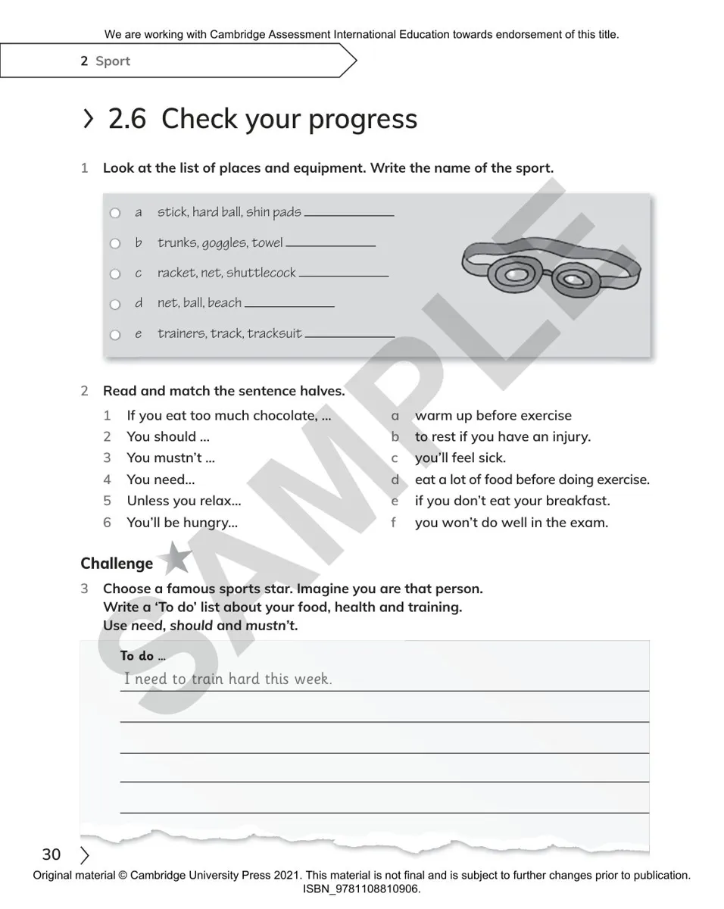
We are working with Cambridge Assessment International Education towards endorsement of this title.
2 Sport
2.6 Check your progress
1 Look at the list of places and equipment. Write the name of the sport.
a
stick, hard ball, shin pads
b
trunks, goggles, towel
c
racket, net, shuttlecock
d
net, ball, beach
e
trainers, track, tracksuit
2 Read and match the sentence halves.
1
If you eat too much chocolate, ...
2
You should ...
3
You mustn’t ...
4
You need...
5
Unless you relax...
6
You’ll be hungry...
Challenge
3 Choose a famous sports star. Imagine you are that person.
Write a ‘To do’ list about your food, health and training.
Use need, should and mustn’t.
To do …
I need to train hard this week.
a
warm up before exercise
b
to rest if you have an injury.
c
you’ll feel sick.
d
eat a lot of food before doing exercise.
e
if you don’t eat your breakfast.
f
you won’t do well in the exam.
30
Original material © Cambridge University Press 2021. This material is not final and is subject to further changes prior to publication.
ISBN_9781108810906.
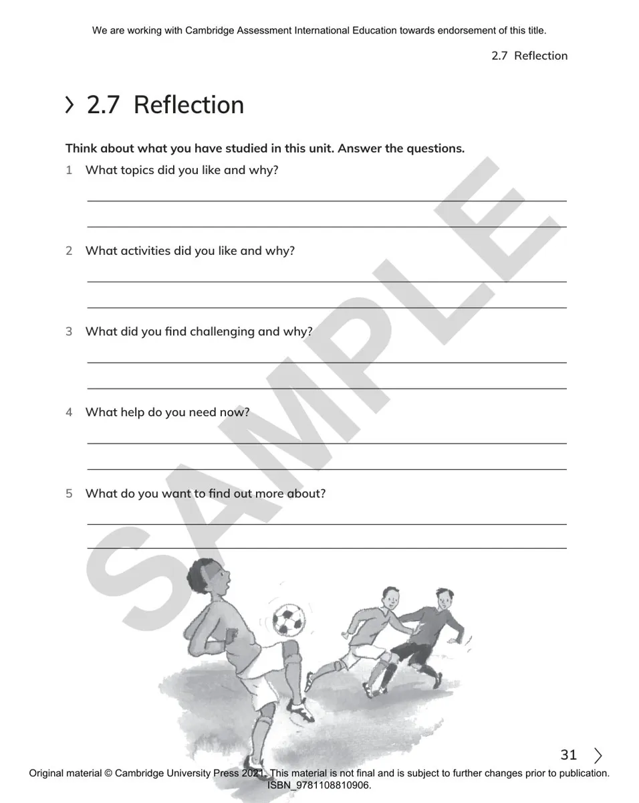
We are working with Cambridge Assessment International Education towards endorsement of this title.
2.7 Refl ection
2.7 Reflection
Think about what you have studied in this unit. Answer the questions.
1 What topics did you like and why?
2 What activities did you like and why?
3 What did you fi nd challenging and why?
4 What help do you need now?
5 What do you want to fi nd out more about?
31
Original material © Cambridge University Press 2021. This material is not final and is subject to further changes prior to publication.
ISBN_9781108810906.
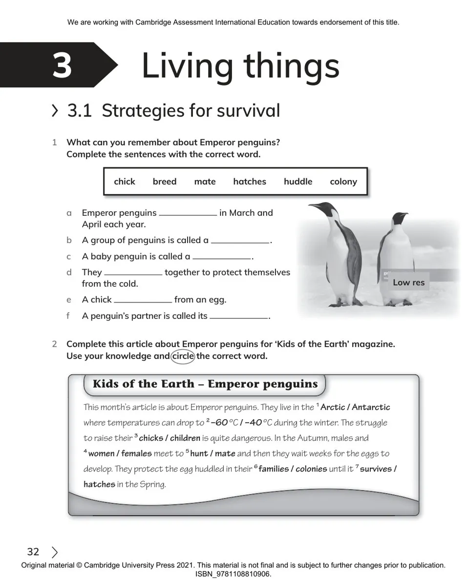
We are working with Cambridge Assessment International Education towards endorsement of this title.
3
Living things
3.1 Strategies for survival
1 What can you remember about Emperor penguins?
Complete the sentences with the correct word.
chick breed mate hatches huddle colony
a
Emperor penguins
in March and
April each year.
b
A group of penguins is called a
.
c
A baby penguin is called a
.
d
They
together to protect themselves
from the cold.
e
A chick
from an egg.
f
A penguin’s partner is called its
.
2 Complete this article about Emperor penguins for ‘Kids of the Earth’ magazine.
Use your knowledge and circle the correct word.
Kids of the Earth – Emperor penguins
This month’s article is about Emperor penguins. They live in the 1 Arctic / Antarctic
where temperatures can drop to 2 –60 ºC / –40 ºC during the winter. The struggle
to raise their 3 chicks / children is quite dangerous. In the Autumn, males and
4 women / females meet to 5 hunt / mate and then they wait weeks for the eggs to
develop. They protect the egg huddled in their 6 families / colonies until it 7 survives /
hatches in the Spring.
Low res
Low res
Low res
32
Original material © Cambridge University Press 2021. This material is not final and is subject to further changes prior to publication.
ISBN_9781108810906.
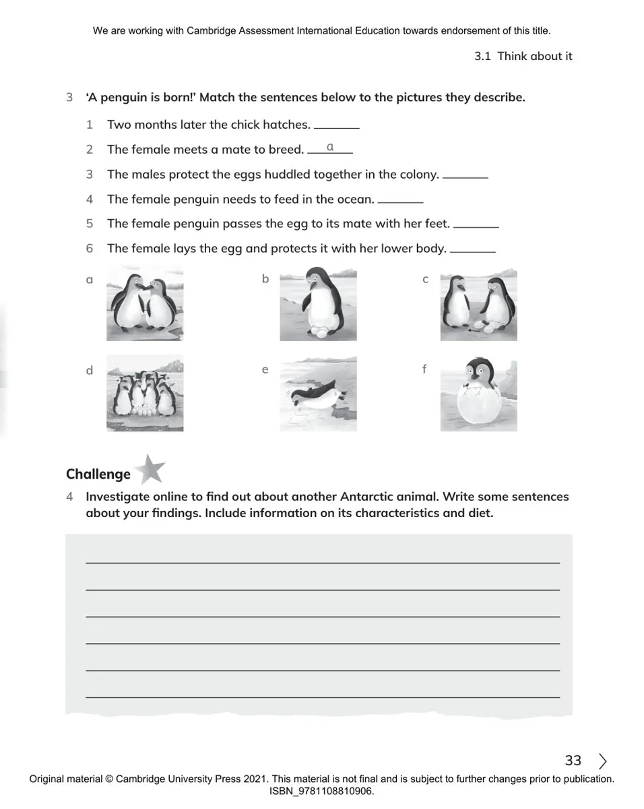
We are working with Cambridge Assessment International Education towards endorsement of this title.
3.1 Think about it
3 ‘A penguin is born!’ Match the sentences below to the pictures they describe.
1
Two months later the chick hatches.
a
2
The female meets a mate to breed.
3
The males protect the eggs huddled together in the colony.
4
The female penguin needs to feed in the ocean.
5
The female penguin passes the egg to its mate with her feet.
6
The female lays the egg and protects it with her lower body.
b
c
a
e
f
d
Challenge
4 Investigate online to fi nd out about another Antarctic animal. Write some sentences
about your fi ndings. Include information on its characteristics and diet.
33
Original material © Cambridge University Press 2021. This material is not final and is subject to further changes prior to publication.
ISBN_9781108810906.
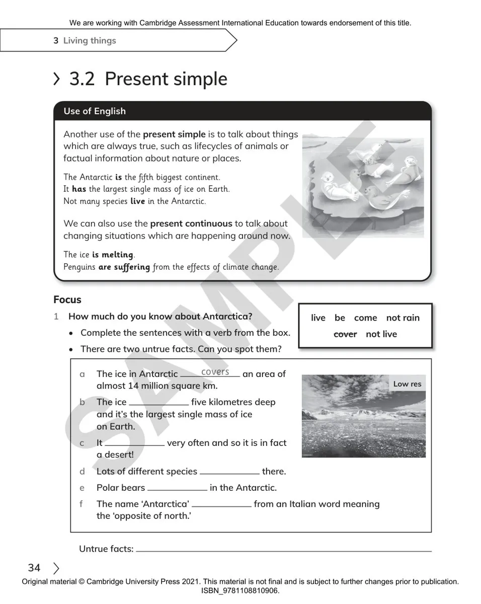
We are working with Cambridge Assessment International Education towards endorsement of this title.
3 Living things
3.2 Present simple
Use of English
Another use of the present simple is to talk about things
which are always true, such as lifecycles of animals or
factual information about nature or places.
The Antarctic is the fi fth biggest continent.
It has the largest single mass of ice on Earth.
Not many species live in the Antarctic.
We can also use the present continuous to talk about
changing situations which are happening around now.
The ice is melting.
Penguins are suffering from the effects of climate change.
Focus
1 How much do you know about Antarctica?
live be come not rain
• Complete the sentences with a verb from the box.
cover not live
• There are two untrue facts. Can you spot them?
covers
a
The ice in Antarctic
an area of
Low res
almost 14 million square km.
b
The ice
five kilometres deep
and it’s the largest single mass of ice
on Earth.
c
It
very often and so it is in fact
a desert!
d
Lots of different species
there.
e
Polar bears
in the Antarctic.
f
The name ‘Antarctica’
from an Italian word meaning
the ‘opposite of north.’
Untrue facts:
34
Original material © Cambridge University Press 2021. This material is not final and is subject to further changes prior to publication.
ISBN_9781108810906.
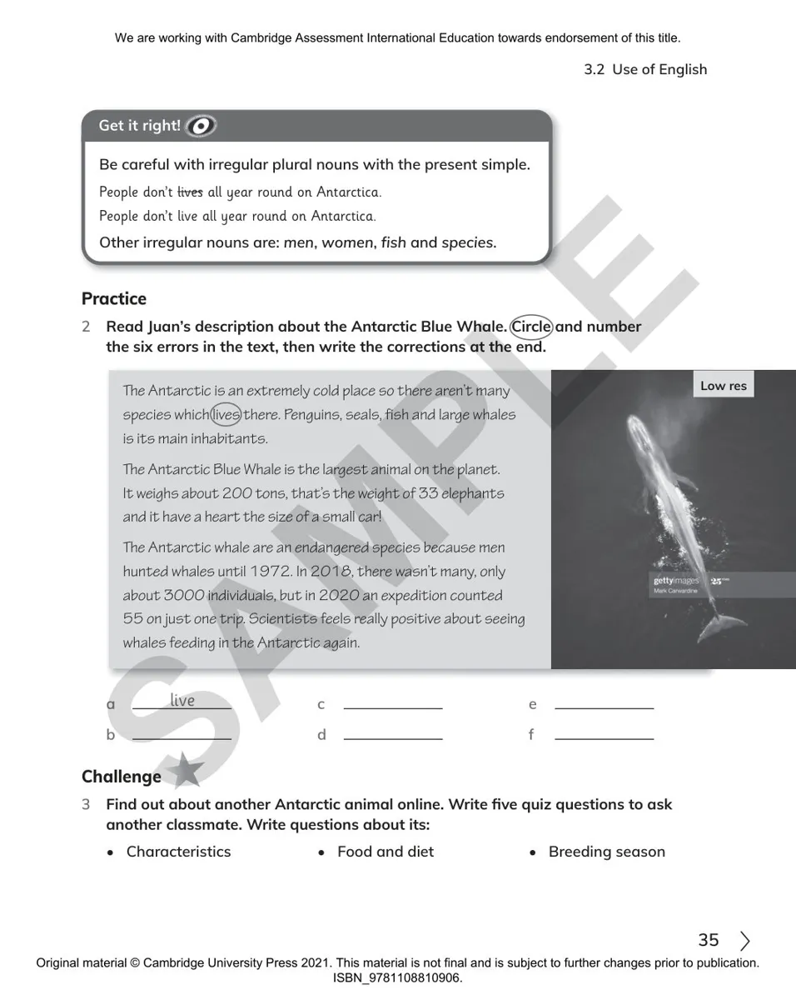
We are working with Cambridge Assessment International Education towards endorsement of this title.
3.2 Use of English
Get it right!
Be careful with irregular plural nouns with the present simple.
People don’t lives all year round on Antarctica.
People don’t live all year round on Antarctica.
Other irregular nouns are: men, women, fish and species.
Practice
2 Read Juan’s description about the Antarctic Blue Whale. Circle and number
the six errors in the text, then write the corrections at the end.
The Antarctic is an extremely cold place so there aren’t many
species which lives there. Penguins, seals, fish and large whales
is its main inhabitants.
The Antarctic Blue Whale is the largest animal on the planet.
It weighs about 200 tons, that’s the weight of 33 elephants
and it have a heart the size of a small car!
The Antarctic whale are an endangered species because men
hunted whales until 1972. In 2018, there wasn’t many, only
about 3000 individuals, but in 2020 an expedition counted
55 on just one trip. Scientists feels really positive about seeing
whales feeding in the Antarctic again.
live
a
c
e
b
d
f
Challenge
3 Find out about another Antarctic animal online. Write fi ve quiz questions to ask
another classmate. Write questions about its:
• Characteristics
• Food and diet
• Breeding season
Low res
35
Original material © Cambridge University Press 2021. This material is not final and is subject to further changes prior to publication.
ISBN_9781108810906.
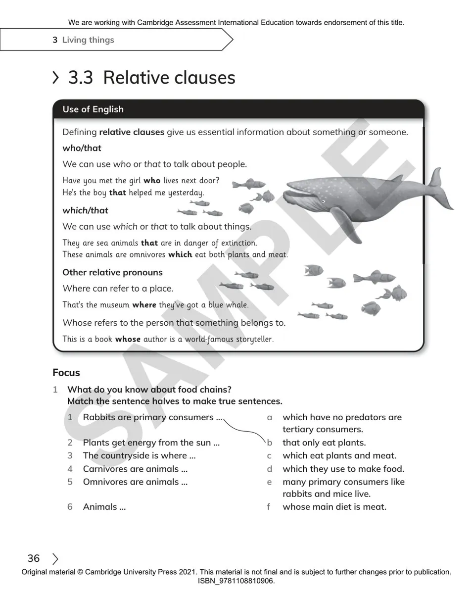
We are working with Cambridge Assessment International Education towards endorsement of this title.
3 Living things
3.3 Relative clauses
Use of English
Defining relative clauses give us essential information about something or someone.
al informatio
n about something or someone.
n
who/that
ople.
We can use who or that to talk about people.
Have you met the girl who lives next door?
He’s the boy that helped me yesterday.
y
which/that
tlk
b
t th
hings.
We can use which or that to talk about things.
They are sea animals that are in danger of extinction.
These animals are omnivores which eat both plants and meat.
tinction.
plants and mea
at.
a
Other relative pronouns
Where can refer to a place.
That’s the museum where they’ve got a blue whale.
Whose refers to the person that something belongs to.
This is a book whose author is a world-famous storyteller.
Focus
1 What do you know about food chains?
Match the sentence halves to make true sentences.
1
Rabbits are primary consumers ...
a
which have no predators are
tertiary consumers.
2
Plants get energy from the sun …
b
that only eat plants.
3
The countryside is where …
c
which eat plants and meat.
4
Carnivores are animals …
d
which they use to make food.
5
Omnivores are animals …
e
many primary consumers like
rabbits and mice live.
6
Animals ...
f
whose main diet is meat.
36
Original material © Cambridge University Press 2021. This material is not final and is subject to further changes prior to publication.
ISBN_9781108810906.
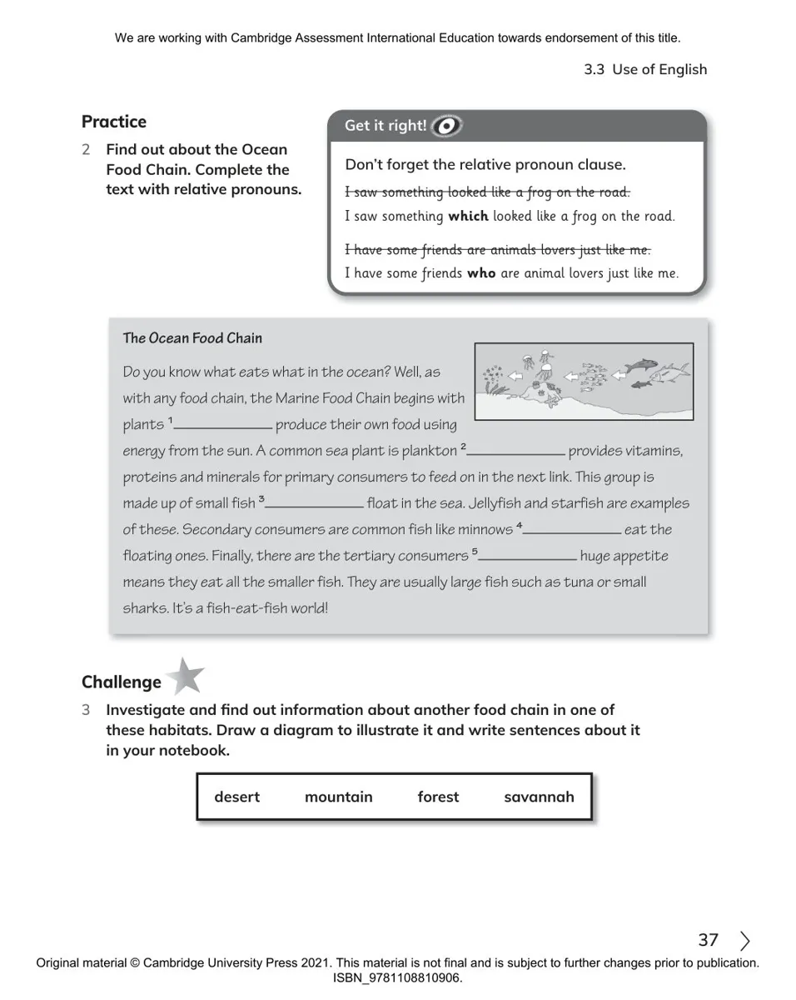
We are working with Cambridge Assessment International Education towards endorsement of this title.
3.3 Use of English
Practice
2 Find out about the Ocean
Food Chain. Complete the
text with relative pronouns.
Get it right!
Don’t forget the relative pronoun clause.
I saw something looked like a frog on the road.
I saw something which looked like a frog on the road.
I have some friends are animals lovers just like me.
I have some friends who are animal lovers just like me.
The Ocean Food Chain
Do you know what eats what in the ocean? Well, as
with any food chain, the Marine Food Chain begins with
plants 1
produce their own food using
energy from the sun. A common sea plant is plankton 2
provides vitamins,
proteins and minerals for primary consumers to feed on in the next link. This group is
made up of small fish 3
float in the sea. Jellyfish and starfish are examples
of these. Secondary consumers are common fish like minnows 4
eat the
floating ones. Finally, there are the tertiary consumers 5
huge appetite
means they eat all the smaller fish. They are usually large fish such as tuna or small
sharks. It’s a fish-eat-fish world!
Challenge
3 Investigate and fi nd out information about another food chain in one of
these habitats. Draw a diagram to illustrate it and write sentences about it
in your notebook.
desert mountain forest savannah
37
Original material © Cambridge University Press 2021. This material is not final and is subject to further changes prior to publication.
ISBN_9781108810906.
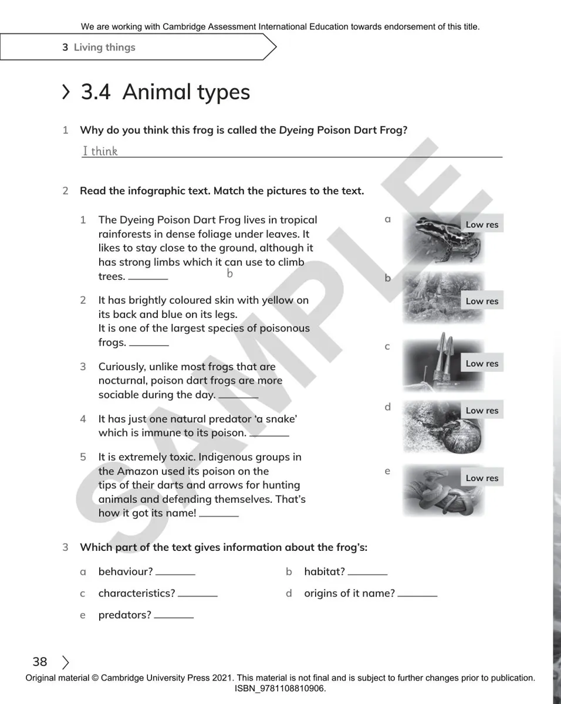
We are working with Cambridge Assessment International Education towards endorsement of this title.
3 Living things
3.4 Animal types
1 Why do you think this frog is called the Dyeing Poison Dart Frog?
I think
2 Read the infographic text. Match the pictures to the text.
1
The Dyeing Poison Dart Frog lives in tropical
rainforests in dense foliage under leaves. It
likes to stay close to the ground, although it
has strong limbs which it can use to climb
trees.
b
2
It has brightly coloured skin with yellow on
its back and blue on its legs.
It is one of the largest species of poisonous
frogs.
3
Curiously, unlike most frogs that are
nocturnal, poison dart frogs are more
sociable during the day.
4
It has just one natural predator ‘a snake’
which is immune to its poison.
5
It is extremely toxic. Indigenous groups in
the Amazon used its poison on the
tips of their darts and arrows for hunting
animals and defending themselves. That’s
how it got its name!
3 Which part of the text gives information about the frog’s:
a
behaviour?
b
habitat?
c
characteristics?
d
origins of it name?
e
predators?
a
Low res
b
Low res
c
Low res
Low res
d
e
Low res
38
Original material © Cambridge University Press 2021. This material is not final and is subject to further changes prior to publication.
ISBN_9781108810906.
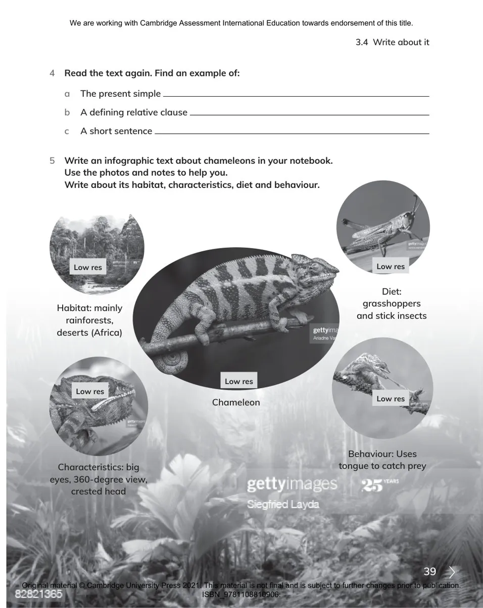
We are working with Cambridge Assessment International Education towards endorsement of this title.
3.4 Write about it
4 Read the text again. Find an example of:
a
The present simple
b
A defining relative clause
c
A short sentence
5 Write an infographic text about chameleons in your notebook.
Use the photos and notes to help you.
Write about its habitat, characteristics, diet and behaviour.
Low res
Low res
Diet:
grasshoppers
and stick insects
Habitat: mainly
rainforests,
deserts (Africa)
Low res
Low res
Chameleon
Low res
Behaviour: Uses
tongue to catch prey
Characteristics: big
eyes, 360-degree view,
crested head
39
Original material © Cambridge University Press 2021. This material is not final and is subject to further changes prior to publication.
ISBN_9781108810906.
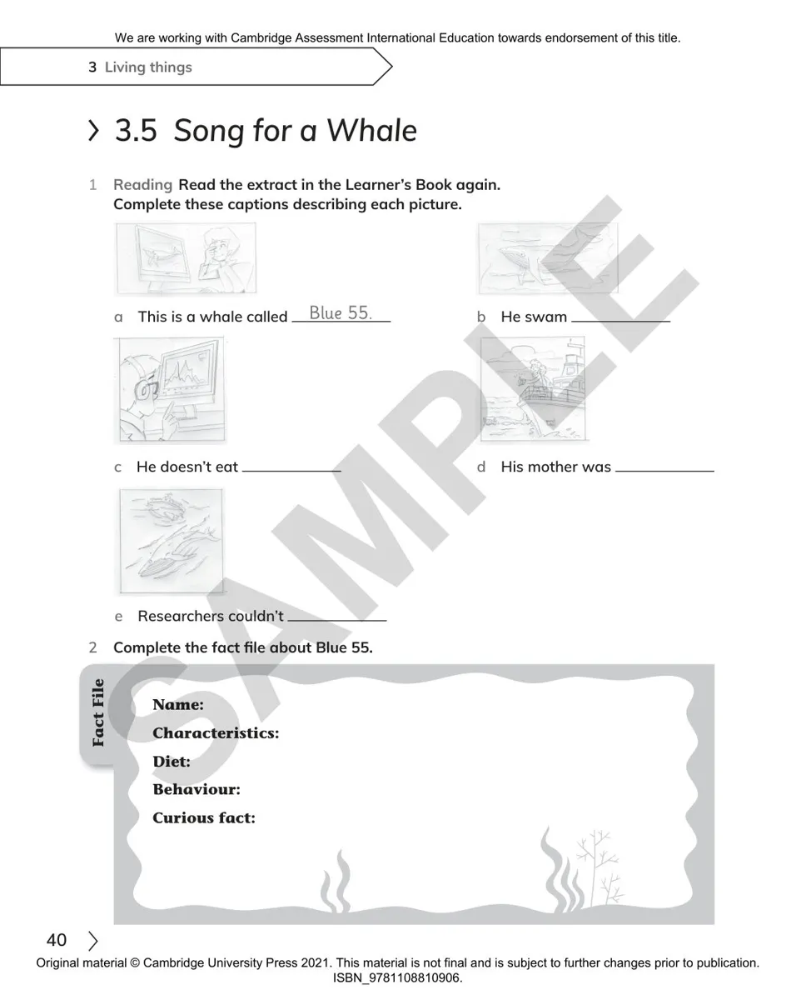
We are working with Cambridge Assessment International Education towards endorsement of this title.
3 Living things
3.5 Song for a Whale
1 ReadingRead the extract in the Learner’s Book again.
Complete these captions describing each picture.
Blue 55.
a This is a whale called
b He swam
c He doesn’t eat
d His mother was
e Researchers couldn’t
2 Complete the fact fi le about Blue 55.
Fact File
Name:
Characteristics:
Diet:
Behaviour:
Curious fact:
40
Original material © Cambridge University Press 2021. This material is not final and is subject to further changes prior to publication.
ISBN_9781108810906.
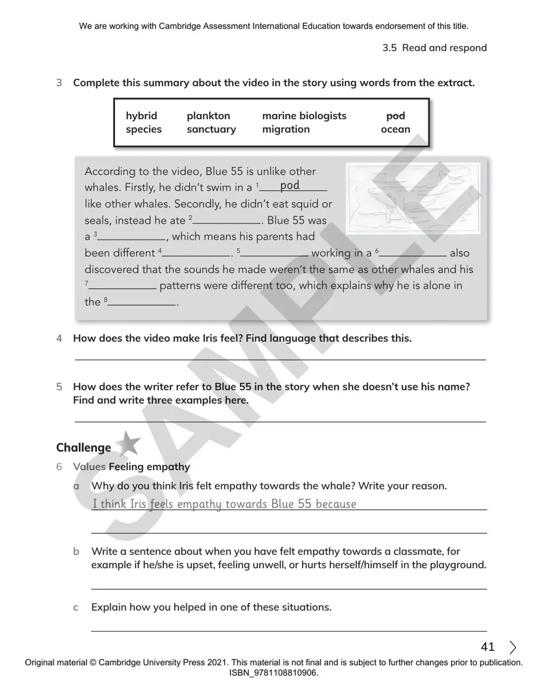
We are working with Cambridge Assessment International Education towards endorsement of this title.
3.5 Read and respond
3 Complete this summary about the video in the story using words from the extract.
hybrid
plankton
marine biologists
pod
species
sanctuary
migration
ocean
According to the video, Blue 55 is unlike other
whales. Firstly, he didn’t swim in a 1
pod
like other whales. Secondly, he didn’t eat squid or
seals, instead he ate 2
. Blue 55 was
a 3
, which means his parents had
been different 4
. 5
working in a 6
also
discovered that the sounds he made weren’t the same as other whales and his
patterns were different too, which explains why he is alone in
7
the 8
.
4 How does the video make Iris feel? Find language that describes this.
5 How does the writer refer to Blue 55 in the story when she doesn’t use his name?
Find and write three examples here.
Challenge
6 Values Feeling empathy
a
Why do you think Iris felt empathy towards the whale? Write your reason.
I think Iris feels empathy towards Blue 55 because
b
Write a sentence about when you have felt empathy towards a classmate, for
example if he/she is upset, feeling unwell, or hurts herself/himself in the playground.
c
Explain how you helped in one of these situations.
41
Original material © Cambridge University Press 2021. This material is not final and is subject to further changes prior to publication.
ISBN_9781108810906.
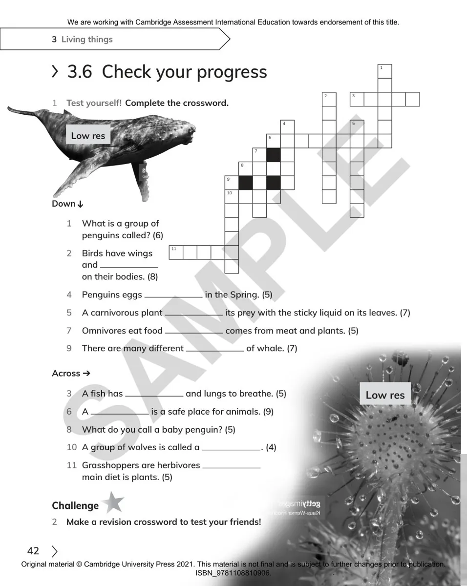
We are working with Cambridge Assessment International Education towards endorsement of this title.
3 Living things
3.6 Check your progress
1 Test yourself!Complete the crossword.
Low res
1
2
3
4
5
6
7
8
9
10
Down
1
What is a group of
penguins called? (6)
2
Birds have wings
and
on their bodies. (8)
4
Penguins eggs
in the Spring. (5)
5
A carnivorous plant
its prey with the sticky liquid on its leaves. (7)
7
Omnivores eat food
comes from meat and plants. (5)
9
There are many different
of whale. (7)
Across ➔
3
A fish has
and lungs to breathe. (5)
6
A
is a safe place for animals. (9)
8
What do you call a baby penguin? (5)
10 A group of wolves is called a
. (4)
11 Grasshoppers are herbivores
main diet is plants. (5)
Challenge
2 Make a revision crossword to test your friends!
11
Low res
42
Original material © Cambridge University Press 2021. This material is not final and is subject to further changes prior to publication.
ISBN_9781108810906.
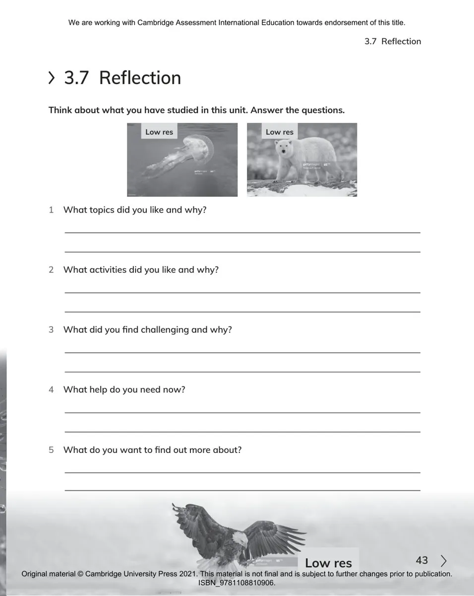
We are working with Cambridge Assessment International Education towards endorsement of this title.
3.7 Refl ection
3.7 Reflection
Think about what you have studied in this unit. Answer the questions.
Low res
Low res
1 What topics did you like and why?
2 What activities did you like and why?
3 What did you fi nd challenging and why?
4 What help do you need now?
5 What do you want to fi nd out more about?
43
Low res
Original material © Cambridge University Press 2021. This material is not final and is subject to further changes prior to publication.
ISBN_9781108810906.
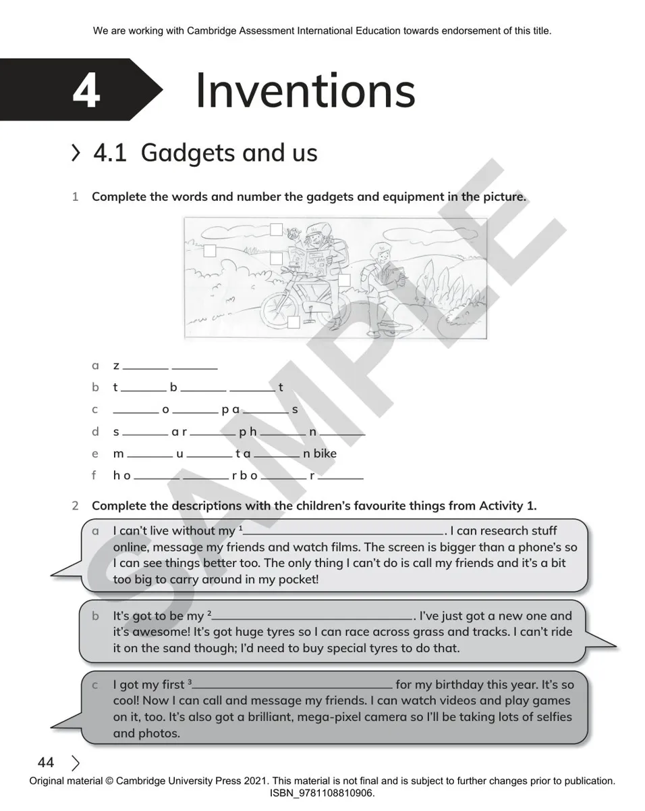
We are working with Cambridge Assessment International Education towards endorsement of this title.
4
Inventions
4.1 Gadgets and us
1 Complete the words and number the gadgets and equipment in the picture.
a
z
b
t
b
t
c
o
p a
s
d
s
a r
p h
n
e
m
u
t a
n bike
f
h o
r b o
r
2 Complete the descriptions with the children’s favourite things from Activity 1.
a
I can’t live without my 1
. I can research stuff
online, message my friends and watch films. The screen is bigger than a phone’s so
I can see things better too. The only thing I can’t do is call my friends and it’s a bit
too big to carry around in my pocket!
b
It’s got to be my 2
. I’ve just got a new one and
it’s awesome! It’s got huge tyres so I can race across grass and tracks. I can’t ride
it on the sand though; I’d need to buy special tyres to do that.
c
I got my first 3
for my birthday this year. It’s so
cool! Now I can call and message my friends. I can watch videos and play games
on it, too. It’s also got a brilliant, mega-pixel camera so I’ll be taking lots of selfies
and photos.
44
Original material © Cambridge University Press 2021. This material is not final and is subject to further changes prior to publication.
ISBN_9781108810906.
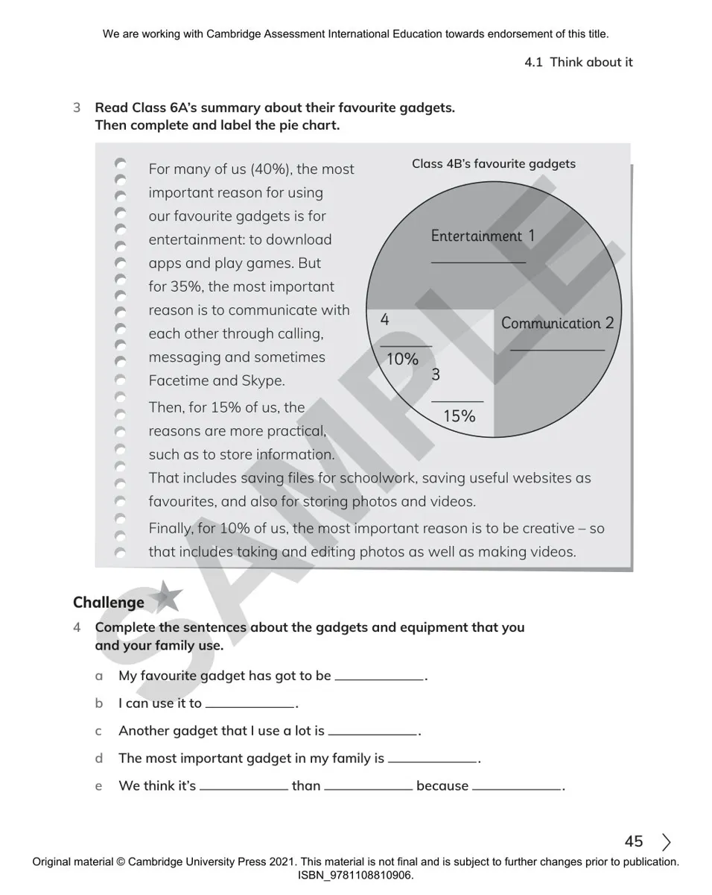
We are working with Cambridge Assessment International Education towards endorsement of this title.
4.1 Think about it
3 Read Class 6A’s summary about their favourite gadgets.
Then complete and label the pie chart.
For many of us (40%), the most
important reason for using
our favourite gadgets is for
entertainment: to download
apps and play games. But
for 35%, the most important
reason is to communicate with
each other through calling,
messaging and sometimes
Facetime and Skype.
Then, for 15% of us, the
15%
reasons are more practical,
such as to store information.
That includes saving files for schoolwork, saving useful websites as
favourites, and also for storing photos and videos.
Finally, for 10% of us, the most important reason is to be creative – so
that includes taking and editing photos as well as making videos.
Class 4B’s favourite gadgets
Entertainment 1
4
Communication 2
10%
3
Challenge
4 Complete the sentences about the gadgets and equipment that you
and your family use.
a
My favourite gadget has got to be
.
b
I can use it to
.
c
Another gadget that I use a lot is
.
d
The most important gadget in my family is
.
e
We think it’s
than
because
.
45
Original material © Cambridge University Press 2021. This material is not final and is subject to further changes prior to publication.
ISBN_9781108810906.
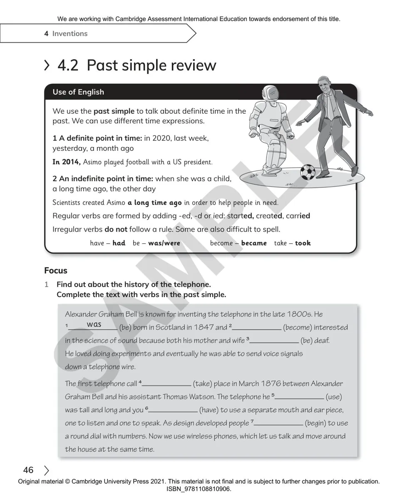
We are working with Cambridge Assessment International Education towards endorsement of this title.
4 Inventions
4.2 Past simple review
Use of English
We use the past simple to talk about definite time in the
past. We can use different time expressions.
he
1 A definite point in time: in 2020, last week,
yesterday, a month ago
In 2014, Asimo played football with a US president.
2 An indefinite point in time: when she was a child,
a long time ago, the other day
Scientists created Asimo a long time ago in order to help people in need.
Regular verbs are formed by adding -ed, -d or ied: started, created, carried
Irregular verbs do not follow a rule. Some are also difficult to spell.
have – had be – was/were become – became take – took
Focus
1 Find out about the history of the telephone.
Complete the text with verbs in the past simple.
Alexander Graham Bell is known for inventing the telephone in the late 1800s. He
was
(be) born in Scotland in 1847 and 2
(become) interested
1
in the science of sound because both his mother and wife 3
(be) deaf.
He loved doing experiments and eventually he was able to send voice signals
down a telephone wire.
The first telephone call 4
(take) place in March 1876 between Alexander
Graham Bell and his assistant Thomas Watson. The telephone he 5
(use)
was tall and long and you 6
(have) to use a separate mouth and ear piece,
one to listen and one to speak. As design developed people 7
(begin) to use
a round dial with numbers. Now we use wireless phones, which let us talk and move around
the house at the same time.
46
Original material © Cambridge University Press 2021. This material is not final and is subject to further changes prior to publication.
ISBN_9781108810906.
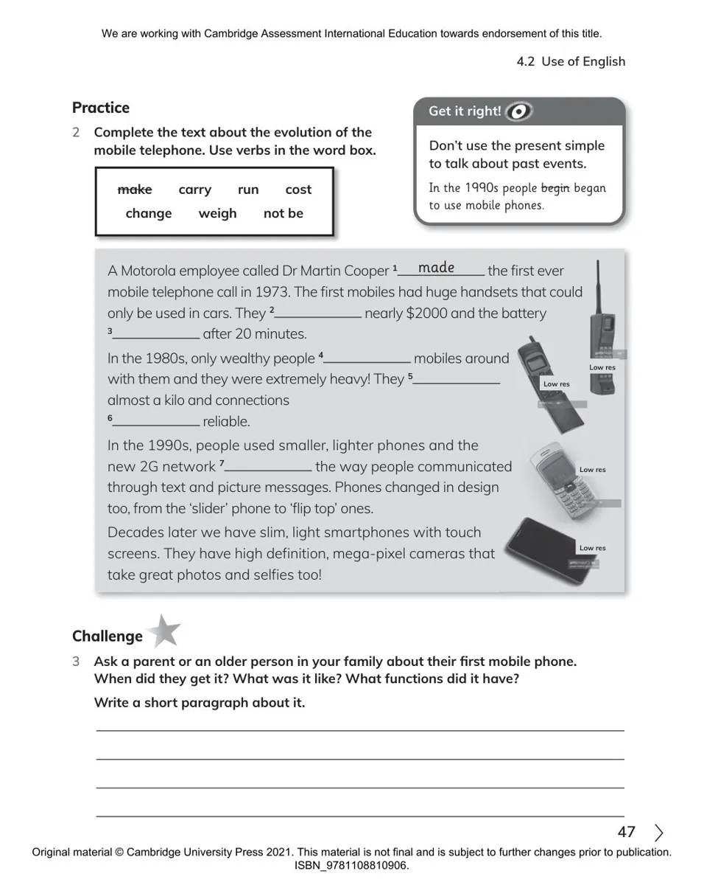
We are working with Cambridge Assessment International Education towards endorsement of this title.
4.2 Use of English
Practice
Get it right!
2 Complete the text about the evolution of the
mobile telephone. Use verbs in the word box.
Don’t use the present simple
to talk about past events.
In the 1990s people begin began
to use mobile phones.
make carry run cost
change weigh not be
made
A Motorola employee called Dr Martin Cooper1
the first ever
mobile telephone call in 1973. The first mobiles had huge handsets that could
only be used in cars. They2
nearly $2000 and the battery
after 20 minutes.
3
In the 1980s, only wealthy people4
mobiles around
with them and they were extremely heavy! They5
almost a kilo and connections
reliable.
6
In the 1990s, people used smaller, lighter phones and the
new 2G network 7
the way people communicated
through text and picture messages. Phones changed in design
too, from the ‘slider’ phone to ‘flip top’ ones.
Decades later we have slim, light smartphones with touch
screens. They have high definition, mega-pixel cameras that
take great photos and selfies too!
Challenge
3 Ask a parent or an older person in your family about their fi rst mobile phone.
When did they get it? What was it like? What functions did it have?
Write a short paragraph about it.
Low res
Low res
Low res
Low res
47
Original material © Cambridge University Press 2021. This material is not final and is subject to further changes prior to publication.
ISBN_9781108810906.
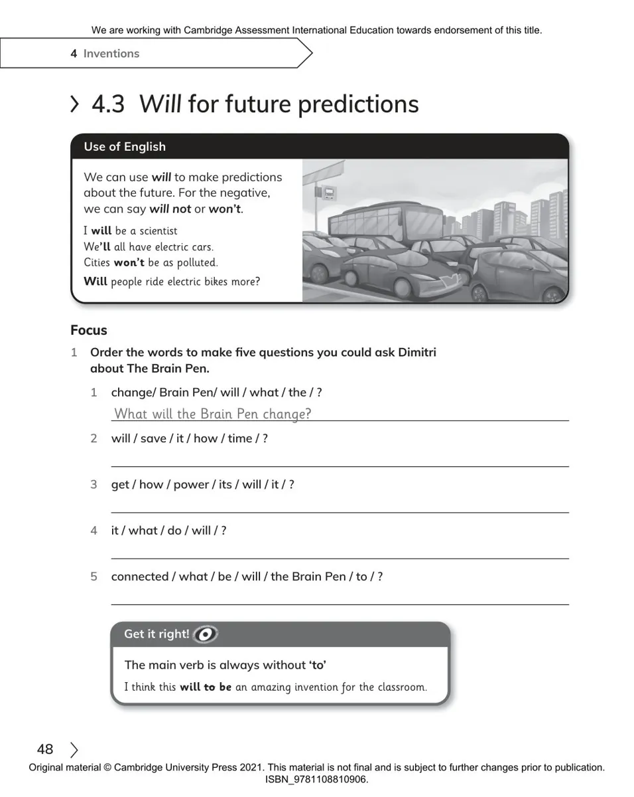
We are working with Cambridge Assessment International Education towards endorsement of this title.
4 Inventions
4.3 Will for future predictions
Use of English
We can use will to make predictions
about the future. For the negative,
we can say will not or won’t.
I will be a scientist
We’ll all have electric cars.
Cities won’t be as polluted.
Will people ride electric bikes more?
Focus
1 Order the words to make fi ve questions you could ask Dimitri
about The Brain Pen.
1
change/ Brain Pen/ will / what / the / ?
What will the Brain Pen change?
2
will / save / it / how / time / ?
3
get / how / power / its / will / it / ?
4
it / what / do / will / ?
5
connected / what / be / will / the Brain Pen / to / ?
Get it right!
The main verb is always without ‘to’
I think this will to be an amazing invention for the classroom.
48
Original material © Cambridge University Press 2021. This material is not final and is subject to further changes prior to publication.
ISBN_9781108810906.
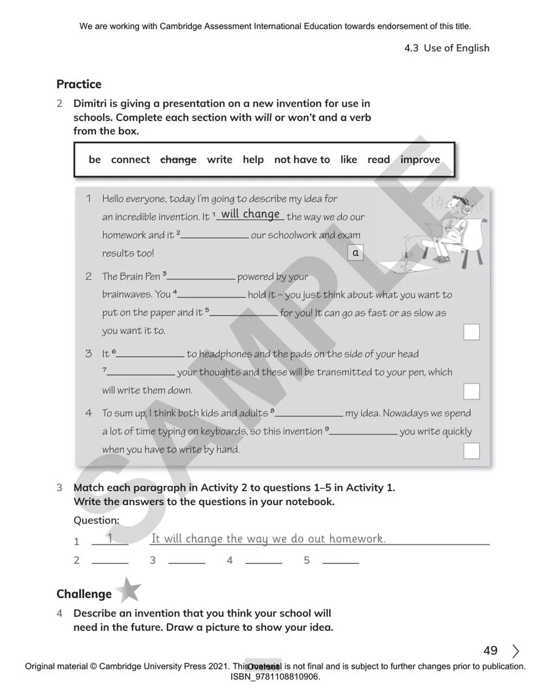
We are working with Cambridge Assessment International Education towards endorsement of this title.
4.3 Use of English
Practice
2 Dimitri is giving a presentation on a new invention for use in
schools. Complete each section with will or won’t and a verb
from the box.
be connect change write help not have to like read improve
1 Hello everyone, today I’m going to describe my idea for
will change
an incredible invention. It 1
the way we do our
homework and it 2
our schoolwork and exam
a
results too!
2 The Brain Pen 3
powered by your
brainwaves. You 4
hold it – you just think about what you want to
put on the paper and it 5
for you! It can go as fast or as slow as
you want it to.
3 It 6
to headphones and the pads on the side of your head
your thoughts and these will be transmitted to your pen, which
7
will write them down.
4 To sum up, I think both kids and adults 8
my idea. Nowadays we spend
a lot of time typing on keyboards, so this invention 9
you write quickly
when you have to write by hand.
3 Match each paragraph in Activity 2 to questions 1–5 in Activity 1.
Write the answers to the questions in your notebook.
Question:
1
It will change the way we do out homework.
1
2
3
4
5
Challenge
4 Describe an invention that you think your school will
need in the future. Draw a picture to show your idea.
49
Overset
Original material © Cambridge University Press 2021. This material is not final and is subject to further changes prior to publication.
ISBN_9781108810906.
We are working with Cambridge Assessment International Education towards endorsement of this title.
Overset page from 49
Original material © Cambridge University Press 2021. This material is not final and is subject to further changes prior to publication.
ISBN_9781108810906.
We are working with Cambridge Assessment International Education towards endorsement of this title.
4 Inventions
4.4 Changing the world
1 Read Kim’s essay about an important invention.
Put the sentences a–f in the correct place to complete it.
b
1
If we didn’t have television, we wouldn’t know about important
things happening in our country or the world. 2
. For example,
when we watch the news, we can find out about what is happening in the next
town or on the other side of the world, all in one programme. 3
.
I think that television is important to educate us and entertain us too. There
are educational TV programmes 4
. Television gives us important
information but it also makes us relax and laugh too. We can watch TV for fun,
5
. But some people say that families would talk to each other more
if there was no television. In my opinion, families can make time for talking, going
out and also watching TV together too.6
.
Low res
a
such as documentaries about wildlife, history and culture.
In my opinion, one of the most important inventions of all time is the television.
b
c
This means that we can know more information about our own country
and other countries too.
d
for example, when we watch cartoons and movies that tell great stories,
e
For these reasons, I think that TV is one of the most important inventions.
f
This is because television can bring us pictures and information very quickly
and from far away.
50
Original material © Cambridge University Press 2021. This material is not final and is subject to further changes prior to publication.
ISBN_9781108810906.
We are working with Cambridge Assessment International Education towards endorsement of this title.
4.4 Write about it
2 Write the phrases in bold from the essay that we use for giving examples
and opinions in the correct column.
Giving examples
Giving reasons/opinions
For example
I think that
3 What is the best invention of the past 10 years?
Choose one of these examples or think of your own.
Low res
Low res
Low res
The drone
The tablet
The LED light bulb
In my opinion the LED light bulb is the best invention of the past 10 years.
4 Write two or three reasons to support your opinion here.
because it uses less electricity.
a
b
c
5 Now write your essay in your notebook. Draw a picture of the invention too.
• Use Kim’s essay to help you.
• Use your notes in Activity 4.
• Use phrases for giving opinions, reasons and examples.
51
Original material © Cambridge University Press 2021. This material is not final and is subject to further changes prior to publication.
ISBN_9781108810906.
We are working with Cambridge Assessment International Education towards endorsement of this title.
4 Inventions
4.5 Start Small, Think Big
1 Reading Read the extract again from the story Start Small,
Think Big. Put the sentences about the story in the
correct order.
a
Suddenly Garth sees the Barker Boys walking towards him
and he tries to run away.
b
Garth feels very excited about testing his new invention –
his Bodybrella – outside in the street near his home.
1
c
The Barker Boys laugh at Garth and his Bodybrella.
d
The lady has an idea to organise a young inventors’ competition
for the town.
e
After talking to the lady, Garth feels much better.
f
A lady from another house in Garth’s street has seen Garth
and the boys and asks him if he is alright.
g
Garth is pleased that his Bodybrella protects him against the rain
and wind.
h
Then the lady looks at Garth’s Bodybrella and likes it a lot.
She thinks that it is a clever idea.
i
Garth feels very upset. Now he thinks that his invention is a failure.
j
Todd Barker throws the Bodybrella over his shoulder.
The boys run away laughing.
Low res
52
Original material © Cambridge University Press 2021. This material is not final and is subject to further changes prior to publication.
ISBN_9781108810906.
We are working with Cambridge Assessment International Education towards endorsement of this title.
4.5 Read and respond
2 Change the adjectives into adverbs.
Then complete the sentences about the story with the correct adverb.
careful secure quick rough gentle
carefully
a
Garth didn’t want to damage the bodybrella so he put it on
.
b
He fastened it
with the strap under his chin.
c
When he saw the boys, Garth turned around
to run home.
d
Todd Barker pulled the bodybrella
off
Garth’s body.
e
The lady took the bodybrella
from Garth
because she could see it was damaged.
3 Match the sentence halves.
1
Have you tried ...
a up my book, there was a spider
under it.
2
When I picked ...
b up the trophy proudly.
3
She stood on the winners’ podium
c
out that new video game yet?
and held
4
They ran ...
d back home quickly to miss the rain.
4 Values Believe in yourself!
Imagine you’re going to try something new and you’re feeling a bit nervous.
Tick the attitudes that are the most helpful.
a
If other kids can do it, so can I!
b
If I can’t do it, everyone will laugh at me.
c
If I don’t try, I won’t know if I can do it.
d
If I fail, I’ll feel really bad!
e
If I know I’ve tried my best, I’ll feel OK.
53
Original material © Cambridge University Press 2021. This material is not final and is subject to further changes prior to publication.
ISBN_9781108810906.
We are working with Cambridge Assessment International Education towards endorsement of this title.
4 Inventions
4.6 Check your progress
1 Test yourself!
Choose the correct answer and write in the space.
1
A
is a two-wheeled, electric gadget.
a mountain bike
btablet
c
hoverboard
2
A
is an instrument that you use for finding directions.
a compass
bzip
c
smartphone
3
A Japanese company
Asimo to the world in 2000.
a started
bpresented
c
developed
4
I really
the exhibition yesterday.
a enjoyed
benjoy
c
will enjoy
5
Pandemics
the way we live in the future.
a changed
bwill to change
c
will change
6
You
to put petrol in your electric car.
a will
bwon’t need
c
won’t to need
7
Have you
your latest invention yet?
a tried on
btried back
c
tried out
8
It was very fragile, so he put it
on the table.
a roughly
b carefully
c
quickly
9
, the most important invention in the world is the internet.
a This means that
bIn my opinion
c
Because of ...
10
Programmes
documentaries and police dramas are
really interesting.
a because
bfor example
c
such as
54
Original material © Cambridge University Press 2021. This material is not final and is subject to further changes prior to publication.
ISBN_9781108810906.
We are working with Cambridge Assessment International Education towards endorsement of this title.
4.7 Refl ection
4.7 Reflection
Think about what you have studied in this unit.
Answer the questions.
1 What topics did you like and why?
2 What activities did you like and why?
3 What did you fi nd challenging and why?
4 What help do you need now?
5 What do you want to fi nd out more about?
Low res
55
55
Original material © Cambridge University Press 2021. This material is not final and is subject to further changes prior to publication.
ISBN_9781108810906.
We are working with Cambridge Assessment International Education towards endorsement of this title.
5
Money
5.1 Spending a sum of money
1 Vocabulary Can you fi nd and circle six words in the word puzzle?
one
eofm
ych
ar
ast
it
ew
ya
ff
av
s
2 Use the words in Activity 1 to complete the sentences.
a
That
helps a lot of people in our country.
b
It’s an expensive
, but everyone wants to wear their trainers!
c
That T-shirt is new and you want to throw it away! What a
!
d
The phone is very cheap – is it made to
or will it break in a few
months?
e
I can’t
to buy that hoodie – I haven’t got enough money.
f
If you
your pocket money, you’ll be able to buy that video game.
3 Think and write your own examples of …
Something you would buy if you could afford it:
a
A popular brand in your country:
b
A charity in your country:
c
Something you have that has lasted a long time:
d
Somewhere you can put money you have saved:
e
f
Something you think is a waste of money:
If I could afford it, I’d buy a helicopter!
d
n
a
r
or
b
dl
t
a
s
56
Original material © Cambridge University Press 2021. This material is not final and is subject to further changes prior to publication.
ISBN_9781108810906.
We are working with Cambridge Assessment International Education towards endorsement of this title.
5.1 Think about it
4 Read the saving tips. Can you match each one to a picture?
1
Watch your money grow!Save your pocket money in a clear glass jar.
2
Have three money jars.Divide your pocket money:
1 Spend (small things); 2 Save (bigger things); 3 Give (helping others).
Think before you buy!Ask yourself, ‘Do I really want this?’
3
Set a savings goal,to help you save for something big.
4
5
Start a savings diary. Trying to save but can’t? Write down what you
spend and think about where you can save that money instead!
- $
3
ets
Swe
$50
b
c
a
- $
4
kers
Stic
$5
ks -
Snac
Spend
Save
Give
e
d
$20
$0
5 Read again and tick [✓] the tips that you (or someone in your family)
have tried. Which ideas do you like best?
Challenge
6 Imagine you have $50! You are going to divide it up into three jars,
Spend, Save and Give (point 2 in Activity 4). Decide how much money
to put in each jar and explain your decisions here.
I’m going to put $20 in the Save jar because …
I’ll put $10 in the Give jar for the Animal Rescue charity, because …
57
Original material © Cambridge University Press 2021. This material is not final and is subject to further changes prior to publication.
ISBN_9781108810906.
We are working with Cambridge Assessment International Education towards endorsement of this title.
5 Money
5.2 Comparative and superlative adverbs
Use of English
We can use comparative adverbs to show change
or compare how something is done.
He grows out of them less quickly than me.
She works harder than everyone else.
We can also use superlative adverbs to make
comparisons.
I spend my pocket money fastest in the shopping mall!
We go shopping most often at the weekend.
To make a superlative adverb stronger, we often
use the + superlative adverb.
This brand of sportswear always sells the best because
it lasts the longest.
Base adverb
Comparative
Superlative
1 syllable: fast hard
faster harder
(the) fastest (the) hardest
more / less quickly
2 syllables: quickly often
more / less often
(the) most / least quickly
(the ) most / least often
Irregular: well badly
better worse
(the) best (the) worst
Focus
1 The Ruiz family have saved and bought a camper van
for holidays. Read and circle the correct words in the
sentences.
a
In the family, who saved the hardest / most hard?
b
Mateo thinks he saved his money the most quickly /
quickliest.
c
He’s right! In the family, Lucas spends money the
more fast / fastest!
d
Now, with the camper van, they can all go on holiday more / most cheaply.
e
So they can have holidays more often / oftener than before.
f
And in the van, they can travel more / least comfortably than before.
58
Original material © Cambridge University Press 2021. This material is not final and is subject to further changes prior to publication.
ISBN_9781108810906.
We are working with Cambridge Assessment International Education towards endorsement of this title.
5.2 Use of English
Get it right!
Remember to use the correct form of the adverb.
See you late.
See you later.
My sister can sing more better better than my brother.
Practice
2 Kofi has saved his pocket money and wants to buy a new football shirt. Circle and
number the eight errors in the conversation, then write the corrections at the end.
Kofi: There’s the City shirt and the National kit. I don’t know which one to buy!
Dad: Well, which one will you wear the oftenest, do you think? 1
Kofi: The City shirt, because we go to City games all the time … but I like
the National shirt more better!
Dad: OK, but I think that shirt costs much than the other one. Have you checked?
Kofi: Oh yes, it’s more expensive. I think I’ve got enough pocket money …
Dad: OK then, try them both on. Let’s see which one fits the better.
[Kofi tries on the two shirts].
Kofi: The National shirt definitely fits the best but it costs the more!
I don’t know what to do!
Dad: Mmm … and the City shirt is a bit too big – it fits more looser, but that is
a good thing because you are growing more faster this year than ever before!
Kofi: So the City shirt will last the most longest?
most often
1
2
4
5
7
8
3 Which football shirt do you think Kofi should buy? Why?
3
6
Overset
59
Original material © Cambridge University Press 2021. This material is not final and is subject to further changes prior to publication.
ISBN_9781108810906.
We are working with Cambridge Assessment International Education towards endorsement of this title.
Overset page from 59
Challenge
4 Can you complete the questions with the correct
adverb? Then answer the questions.
a
Which clothes have you got that have lasted
?
b
Do you save your pocket money? How can you save it
?
c
What do you like doing
? Buying something nice or going out
somewhere exciting? Which is the most fun?
d
What do you do
? Go shopping or play sports?
How many times a month?
the longest more often
more easily best
Original material © Cambridge University Press 2021. This material is not final and is subject to further changes prior to publication.
ISBN_9781108810906.
We are working with Cambridge Assessment International Education towards endorsement of this title.
5 Money
5.3 Quantifiers
Use of English
We use the quantifiers, several and plenty of, to describe amounts of things
(we don’t know exactly how much).
At the school fair, there were several book stalls… (several = 3 or 4)
… and there were plenty of food stalls… (plenty of = lots of)
Either … or and both of always refer to ‘two’.
Either ... or means a choice of two.
both or both of = two people or things
Both comes after the verb, to be; but before other verbs:
You are both very good at helping …
We both baked cakes for the school fair.
You can either help with the book stall or tidy up the rubbish –
it’s up to you!
neither … nor = the negative form of either … or (‘not either’)
There’s neither burgers nor sausages at the school fair – most of the food is vegetarian.
Focus
1 Sara and Dani have a food stall at the school fair.
Look at the picture. Is each sentence true or false?
Correct the false sentences in your notebooks.
a
There are several types of drink for sale.
b
Neither Sara nor Dani are helping on the food
stall.
c
There are plenty of cakes for sale.
d
You can buy either sandwiches or water on
the stall.
e
Both of the children are pouring fruit drinks.
60
Original material © Cambridge University Press 2021. This material is not final and is subject to further changes prior to publication.
ISBN_9781108810906.
We are working with Cambridge Assessment International Education towards endorsement of this title.
5.3 Use of English
Practice
2 Look at Sara and Dani’s poster
about their food stall. Choose
the correct quantifi ers to
complete their report.
several Neither … nor
either … or Both of
plenty of
We had a very good day at the school fair! We sold all our cupcakes and all our fruit
juice by 12 p.m. So, we didn’t have to work in the afternoon – we had 1
time
to relax and enjoy the rest of the fair.
There were 2
food and drink stalls at the fair – maybe about three
or four different ones. On most of the stalls, people could buy 3
food
a drink – but not food and drink together. But on our stall, people could buy
something to eat AND drink, so maybe that is the reason that our stall was so popular!
We had a great day! 4
of us got bored
wanted to go home
early! 5
us want to do another stall at the next school fair!
Challenge
3 Lexi and Jack didn’t have a good day at the school fair!
Can you write sentences to describe the picture?
Include at least three quantifi ers (more if you can!).
Both of the children look bored.
Get it right!
Remember to use correct
word order with both.
We both are helping
We are both helping on the stall.
We want both to go
We bothwant to go to the school fair.
61
Original material © Cambridge University Press 2021. This material is not final and is subject to further changes prior to publication.
ISBN_9781108810906.
We are working with Cambridge Assessment International Education towards endorsement of this title.
5 Money
5.4 The question of money
1 Read Dana’s essay and choose a sentence, a–d, to
complete the missing parts.
Does a lot of money make us happy?
In my opinion, money is important but there are other
1
things that are more important than having a lot of money.
because we can’t do anything or go anywhere if we aren’t
2
healthy. If you have a lot of money, you can buy nice things for
yourself and travel to exciting places. But you can’t enjoy these
things if you don’t feel healthy.
Some people are very rich, but don’t have any good friends
3
and I think that’s a sad situation. However, if you can afford to do
lots of hobbies, you will meet a lot of new people and maybe make
some new friends. But if you are very rich, how do you know if your
new friends really like you or your money?
but there are other things that are more important than lots
4
of money. Therefore, I would like to say that good health and good
family and friends are more important than being very rich!
a
Secondly, it is more important to have a good family and good friends.
bA lot of people think that we need to have a large amount of money to make
us happy.
c
Finally, I think it is important to have money for the things we need,
d
Firstly, it is more important to be healthy,
Writing tip
Connecting words
Use connecting words to organise your ideas logically and help readers
follow the points in your essay.
Firstly, when you have pocket money you …
…pocket money is a good idea because it teaches us to manage money ourselves.
62
Original material © Cambridge University Press 2021. This material is not final and is subject to further changes prior to publication.
ISBN_9781108810906.
We are working with Cambridge Assessment International Education towards endorsement of this title.
5.4 Write about it
2 Read Dana’s essay again and answer the questions in your notebook.
Use the connecting words in bold to help you.
a
What is the main opinion of the essay?
b
Which two points support the main opinion?
c
Find one point against the main opinion.
d
In which paragraph can you find a summary of the main points?
3 Do you agree with Dana’s points? Think of two more points to add
to the essay (you can either agree or disagree!).
4 Choose a refl exive pronoun to complete the sentences?
myself
yourself
a
My brother earned his extra pocket money
himself
herself
by doing jobs at home.
ourselves
yourselves
b
Dad bought Kris and Jan one video game and they
themselves itself
bought the other one
.
c
To save money, my sister repaired her bike
.
d
Why are you still feeding the kitten? It can feed
now.
e
My brother and I painted our bedroom
.
f
If you both want such expensive phones, you must save some of the money
.
5 Write a short essay for this title: How much pocket money do you need at your age?
Plan it like this:
• What is your opinion or point of view? Write points to support your opinion.
Write at least one contrasting point.
• Organise your points under these headings:
– Introduction to the main point of view (what is the essay about?)
– Points to support the main opinion
– One point against the main opinion
– Conclusion: summarises the main point
• Remember to use connecting words!
63
Original material © Cambridge University Press 2021. This material is not final and is subject to further changes prior to publication.
ISBN_9781108810906.
We are working with Cambridge Assessment International Education towards endorsement of this title.
5 Money
5.5 Billionaire Boy
1 How much is one billion? Tick [✓] the correct answer.
a
100 x 1 million
b 1 000 x 1 million
2 How do you write one billion in numbers? Tick [✓] the correct answer.
a
100 000 000
b 1 000 000 000
3 Read the story again. Are the sentences true or false?
Correct the false sentences in your notebook.
a
Joe’s house is so big that he only knows part of it.
b
He has only lived in his house for a very short time.
c
The carpets are made of wool.
d
The orang-utan still works for the family.
e
Joe is happy with the cheque his father gave him for his birthday.
f
Joe wants to have his own speedboat as a present too.
g
Joe wants to go to a different school.
h
His dad doesn’t want him to go to the local free state school.
i
He thinks the other children at the new school will be unkind to Joe.
j
Mr Spud refuses to let Joe go to the new school.
4 What is the reason that Joe wants to go to a new school?
Do you think he will find what he is looking for? Why? Why not?
64
Original material © Cambridge University Press 2021. This material is not final and is subject to further changes prior to publication.
ISBN_9781108810906.
We are working with Cambridge Assessment International Education towards endorsement of this title.
5.5 Read and respond
5 Look at the powerful words from the story.
Can you choose the correct ones to complete the speech bubbles?
motor up
fake
proper
frustration
forlorn
pictured
posh
milling
chauffeured
a
That doesn’t look like
a real diamond to me –
it looks
!
b
That’s a
dress! Are you going
somewhere special?
c
I’m shouting in
! Why
can’t you see my point?
d
Don’t look so
! We’ll still
go on holiday next year.
e
I
us in a
nice holiday apartment …
not this tent!
Challenge
6 Values One of your family has given you $20 US to give
away to a charity or someone else that needs it.
• First, find out how much $20 US is in the currency of your country.
• What are you going to do with it? Write your ideas and reasons in your notebook
and draw a picture to represent your idea.
I’m going to give it to … because …
65
Original material © Cambridge University Press 2021. This material is not final and is subject to further changes prior to publication.
ISBN_9781108810906.
Low res
We are working with Cambridge Assessment International Education towards endorsement of this title.
5 Money
5.6 Check your progress
1 Read the clues and write the words in the word puzzle. Find the hidden word!
1 A synonym of real.
1
2 A connecting word that introduces a
second point.
3 An organisation that helps people
3
in need.
4 A synonym of false.
5
5 To keep money for the future.
6 A connecting word that shows contrast.
7 You can spend or save this.
8 When you have enough money to
8
buy something.
9
9 In my … (your point of view)
10 A connecting word to give
a reason.
11 A connecting word that
introduces the first point.
Which word is hidden in the puzzle?
2
Remember the money idioms from Lesson 5.5?
Choose the correct words to complete the idioms.
Can you match each one to a defi nition?
1
He has more
than sense.
2
He has a
that pays peanuts.
3
He has money to
.
a
A job that doesn’t pay very much money.
b
When someone has more money than they need or they spend
their money on things that are unnecessary.
c
When someone has a lot of money but isn’t clever enough to spend it wisely.
2
4
6
7
10
11
burn money job
66
Original material © Cambridge University Press 2021. This material is not final and is subject to further changes prior to publication.
ISBN_9781108810906.
We are working with Cambridge Assessment International Education towards endorsement of this title.
5.7 Refl ection
5.7 Reflection
Think about what you have studied in this unit. Answer the questions.
1 What topics did you like and why?
Low res
2 What activities did you like and why?
3 What did you fi nd challenging and why?
4 What help do you need now?
5 What do you want to fi nd out more about?
Low res
67
Original material © Cambridge University Press 2021. This material is not final and is subject to further changes prior to publication.
ISBN_9781108810906.
We are working with Cambridge Assessment International Education towards endorsement of this title.
6
People and work
6.1 How do you get a job?
1 Vocabulary Jobs
Complete the sentences with the correct adjective.
Use the jumbled letters to help you.
a
opmurcte gmporaemrr
A person who writes instructions that a computer can understand.
b
cnsieec ectaehr
A person who teaches physics, chemistry and biology.
c
tpspyisohherait
A person who treats sports injuries.
d
nairem goliositb
A scientist who studies sea wildlife.
e
tve
An animal doctor.
f
egnernie
A person who designs machines and structures for buildings.
2 Can you fi nd three compound nouns in the word puzzles in Activity 1?
Write the nouns here.
3 Complete the sentences with these compound nouns.
university degree
a
My older sister does
for an animal charity
in her school holidays.
work experience
voluntary work
b
For some jobs, you need to study for a
first.
c
When you do
, you work in a company for a short time
while you are still at school or university.
4 Do you know anyone who has done work experience, a university degree or
voluntary work? Write two interesting facts in your notebook.
My brother is studying for a university degree in …
68
Original material © Cambridge University Press 2021. This material is not final and is subject to further changes prior to publication.
ISBN_9781108810906.
We are working with Cambridge Assessment International Education towards endorsement of this title.
6.1 Think about it
5 Read the interview with Deepak.
Which job in Activity 1 does he do?
What’s your job?
Interviewer:1
Deepak: I’m a
at a city high school.
Interviewer:2
Deepak: Well, I was always really keen on science in school,
and I wanted to help children understand and enjoy it like I did.
Interviewer:3
Deepak: Yes, overall I think I am good at what I do. I’m quite good with kids in general.
I understand the way they think and learn, so teaching is the perfect job for me.
Interviewer:4
Deepak: I got a university degree – you need to study hard and know your subject very
well if you want to teach it to other people. Then after that I studied for an extra year to
become a teacher. I did a lot of work experience in a school, teaching real classes.
Interviewer:5
Deepak: My favourite thing is when my students get excited about what they are learning.
For example, when we do a science experiment, and everyone has fun and learns something
new at the same time.
6 Read the interview again. Match the questions to the answers (2–5) in Activity 5.
a What do you enjoy most about your job?
b Why did you choose this job?
c
What’s your job?
d Do you think you are good at your job? Why?
e
What did you do to get your job?
Challenge
7 In your notebook, write the name of a job that you find interesting. Write two
questions to ask someone who does that job. Then imagine and write their answers.
69
Original material © Cambridge University Press 2021. This material is not final and is subject to further changes prior to publication.
ISBN_9781108810906.
We are working with Cambridge Assessment International Education towards endorsement of this title.
6 People and work
6.2 Adjectives + prepositions + nouns
Use of English
Some adjectives and preposition always go together.
There are no fixed rules, so it helps to learn the words together, as a ‘chunk’.
Adjective + preposition phrases are often followed by a noun (or pronoun).
Here are some patterns to help you remember (but remember that there
are exceptions).
We use (adjective +) at, for skills and abilities.
I was good at maths and science anyway. I worked hard at them at school.
We use about and of to talk about feelings.
Ben is nervous about his maths exam. Hua is proud of her science project.
We can also use adjectives with in and with.
For this job, you need to be experiencedin photography.
He is great with engines and machines.
Focus
1 Read about Lisa, a chocolate expert. Circle the correct prepositions.
Lisa Tomas is a chocolate expert! She is fascinated 1 in / by chocolate
and she wants other people to get excited 2 about / of it too. She works
for a famous chocolate brand and sells their products to shops and
hotels. To do Lisa’s job, you must be very enthusiastic 3 about / in the
product because you have to persuade people to buy it! You must be good 4 of / with people and
enjoy talking to them about the different types of chocolate.
As a child, Lisa was very fond 5 of / about deserts and she loved cooking and baking. When
she was a teenager, she tried making her own chocolate (not easy!). She soon realised
that she was more interested 6 with / in chocolate than any other sweet treat and she
decided then that she wanted to become a chocolate expert!
2 Read the text again and underline the noun or pronoun that follows
each adjective + preposition phrase.
70
Original material © Cambridge University Press 2021. This material is not final and is subject to further changes prior to publication.
ISBN_9781108810906.
We are working with Cambridge Assessment International Education towards endorsement of this title.
6.2 Use of English
Get it right!
Remember to use the correct preposition after the adjective.
We are so happy forabout our exam results!
I am so angry towith you!
Practice
3 Choose the correct prepositions to complete the
dialogue about Tom’s job. You will need to use
some of the words twice.
Interviewer: Hi everyone! Welcome to Job Spot, the podcast that looks at fun and unusual
jobs. If you like a great day out and you’re keen1
theme parks, our next guest
can tell you a thing or two! Welcome Tom! Tell us about your job.
Tom: Hello. I work in theme parks, testing water slides and rollercoaster rides!
Interviewer: Wow! Sounds amazing. You must get very excited2
your work!
Tom: Yes, I do. I’m crazy3
it. But there is a serious side to it. I test the rides to
make sure they are safe for families to use.
Interviewer: So, what kind of things do you look for when you test the rides?
Tom: For the water slides, I’m interested4
the height, speed and the amount
of water. All these things affect the safety of the slide. You need to be good5
maths and science in my job, so you can understand how things are built and what happens
when people use them.
Interviewer: So did you work hard6
those subjects when you were at school?
Tom: Yes, I did, because I wasn’t always strong7
maths and science at school.
But I was always fascinated8
machines and how they worked, so that interest
helped me to study the school subjects – and get my dream job today!
Challenge
4 Complete these sentences to make them true about you.
First write the correct preposition after the adjective in bold.
a
At school, I’m very keen
b
I am fascinated
71
Overset
Original material © Cambridge University Press 2021. This material is not final and is subject to further changes prior to publication.
ISBN_9781108810906.
Low res
on about in at by
We are working with Cambridge Assessment International Education towards endorsement of this title.
Overset page from 71
c
Our teacher is fond
d
My family is interested
e
My best friend is crazy
f
I’m quite good
Original material © Cambridge University Press 2021. This material is not final and is subject to further changes prior to publication.
ISBN_9781108810906.
We are working with Cambridge Assessment International Education towards endorsement of this title.
6 People and work
6.3 Reported speech
Use of English
We use reported speech to tell someone what another person has said.
In reported statements, the verb tense often moves further back from the tense in the
direct statements.
Direct speech
Reported speech
‘I often do experiments in space,’ Karina
said.
Karina said that she often did
experiments in space.
‘How are you preparing for the space
journey?’ they asked.
They asked how we were preparing for
the space journey.
‘Astronauts will explore Mars in the
future,’ she said.
She said that astronauts would explore
Mars in the future.
Direct commands
‘Wear protective clothing’
He told them to wear protective clothing.
Focus
1 American astronaut Karina is talking to Year 6 students about
her space suit. Can you complete her reported statements
with the correct verbs and forms?
can do so many things!
It supplies oxygen for me to breathe when
I’m in space. It also has air conditioning and heating,
to protect me from the heat and cold. My space suit
even provides water for me to drink. very big and
heavy – it takes me one hour to put it on!
Maybe in the future they will invent a
lighter space suit!’
a
She told the students that the space suit
her from heat and cold.
b
She said that the space suit
water for her to drink.
c
She
them that the space suit heavy to wear.
d
She hoped that they
invent a lighter space suit in the future.
72
Original material © Cambridge University Press 2021. This material is not final and is subject to further changes prior to publication.
ISBN_9781108810906.
Low res
We are working with Cambridge Assessment International Education towards endorsement of this title.
6.3 Use of English
Get it right!
Remember the pronoun with ‘tell’
She told that her school has a uniform. She told me that her
school has a uniform.
He told to put on our jackets. He told us to put on our jackets.
Remember: there is no pronoun after ‘say’ Karina said us that she ….
Karina said that she couldn't put her spacesuit on quickly
Practice
2 Read Bao’s ideas for changing the design of the kit at
his school running club. Can you complete the table
with direct and reported statements?
Direct statement / command
Reported statement / command
1 He said that he wanted to make
some changes to the sports kit.
‘I want to make some changes to the
sports kit.’
2
He said we needed a brighter stripe on
the t-shirt.
3
‘A brighter stripe will be easier to see at
night.’
4
‘It isn’t easy to see the school logo on our
sports kit’.
5
‘Put the school logo at the top of the
sleeve.’
He told
6
‘People can see a logo better at the top
of the sleeve, near the shoulder.’
He told
7
He explained that the backpack didn’t
have any pockets.
Challenge
3 Find an interview (online or in print) with someone who you think has
an interesting job. Read the interview and find four interesting points.
Write the points in your notebook in reported statements.
I read an interview with …. who is a famous football player. He said that …
73
Original material © Cambridge University Press 2021. This material is not final and is subject to further changes prior to publication.
ISBN_9781108810906.
We are working with Cambridge Assessment International Education towards endorsement of this title.
6 People and work
6.4 Let’s get a job!
1 Read the first lines of the job advertisements. Match each one with a picture.
a
c
b
1
We are looking for a funny actor to star in our comedy play.
2
We are looking for a talented hairdresser to join our creative team.
3
We are looking for a dynamic pilot to fly
a huge jet plane.
Writing tip
Use shortened sentences in adverts
2 Match the lines from the rest of the job
adverts with the correct jobs in Activity 1.
You Must be able to do experiments.
Experience needed …
a
1 Must be an expert at using a pair of scissors.
2 Must be knowledgeable about humorous books and plays.
3 Must know how all the controls in a cockpit work.
4 Interviews will be held in the theatre.
5 Experience needed – our customers want to look good!
6 Must be able to make people laugh a lot.
7 Interviews will be held in the cockpit.
8 Interviews will be held in the salon.
9 Must know how to fly across the world in the right direction.
10 Must look good in funny costumes.
11 Must have good eyesight so you don’t cut the wrong bit.
12 Must be good with heights.
74
Original material © Cambridge University Press 2021. This material is not final and is subject to further changes prior to publication.
ISBN_9781108810906.
We are working with Cambridge Assessment International Education towards endorsement of this title.
6.4 Write about it
3 Read the Use of English box.
Can you complete the sentences
with the correct forms of the verbs?
Use of English
Present continuous review
We use the present continuous to describe
continuous actions happening now.
work practise do
send study not look
We are looking for a friendly zookeeper …
They are recruiting genius-level inventors …
is studying
a Right now my sister
for a university degree.
b I
you an email about the job now – look out for it in your inbox.
c
your older brother still
for that famous sports brand?
d My cousins
work experience at a technology company.
e
No, he
for a job yet – he is still studying.
f
Thea wants to be a musician when she grows up, so she
hard at the moment.
4 Write sentences about what you are doing at the moment.
Use the present continuous.
a Describe a school project you’re working on at the moment.
b What’s happening in the place you are in right now?
c
Describe a free-time activity you’re doing at the moment.
Challenge
5 Complete the job advert with your own ideas.
Overset
75
Original material © Cambridge University Press 2021. This material is not final and is subject to further changes prior to publication.
ISBN_9781108810906.
We are working with Cambridge Assessment International Education towards endorsement of this title.
Overset page from 75
•
We are looking for a (adjective) and (adjective) (job title)
•
Experience need – (why?)
•
Must be good at … (?)
•
Must be knowledgeable about … (?)
•
Must be interested in … (?)
•
Interviews will be held in the … (where?)
Original material © Cambridge University Press 2021. This material is not final and is subject to further changes prior to publication.
ISBN_9781108810906.
We are working with Cambridge Assessment International Education towards endorsement of this title.
6 People and work
6.5 You can be anything
1 Reading Read the poem You can be anything by Teri Hopkins on pages 102–103 in
the Learner’s Book again. Tick (✓) the sentences that express the advice in the poem.
a There are lots of different types of jobs that you can do.
b You can be anything you want to be – you don’t have to work hard.
c
It is possible to do any kind of job, but you must make an effort.
d You should make goals for yourself and aim high.
e
If something goes wrong, you should keep trying.
f
If you are happy in the job you do, you will be successful.
g Someone else will decide the job you do in the future.
h You are responsible for choosing the job you do in the future.
2 Word study Suffi xes
Add -ist / -er / -or to complete the words for jobs.
Then circle the jobs that appear in the poem.
ist
scient
flor
firefight
doct
teach
police office
dent
build
hairdress
art
sing
act
plaster
3 What are their jobs? Use the words in Activity 2 to help you.
b
c
a
d
76
Original material © Cambridge University Press 2021. This material is not final and is subject to further changes prior to publication.
ISBN_9781108810906.
We are working with Cambridge Assessment International Education towards endorsement of this title.
6.5 Read and respond
4 What jobs could these children have
when they grow up? Write a sentence
with could after each description.
a Freya is good at science and
interested in helping other people.
She could
.
b Jian is great at making
and fixing things.
He
.
c
Marta is creative and fond of growing plants.
She
.
d Dmitri is crazy about music and has a strong voice.
He
.
e
Tara is keen on Maths and good with children.
She
.
f
Marco is scared of fire and doesn’t like heights.
He couldn’t
.
5 Now complete the sentences to make them true for you.
a If I work hard, I
.
b When I grow up, I
.
c
If my family move house, we could
.
d If I finish my homework early, I
.
e
If I meet my friends this weekend, we
.
6 Values Working hard and setting goals
Look at the children’s goals. Match goals 1–4 to the advice a–d.
1 Elena wants to be in the Under-12
basketball team for her school.
a Do two hours of extra
study each weekend
2 Theo wants to save up for a
new bike.
b Do more jobs at home to
earn extra pocket money.
3 Chao wants to get a good grade
in his Maths exam.
c Do half an hour of extra net
practice a day.
77
Original material © Cambridge University Press 2021. This material is not final and is subject to further changes prior to publication.
ISBN_9781108810906.
Language focus: could (+verb)
In these sentences, we use could (+ verb)
to talk about something that is possible.
You could be a doctor and look after the sick.
We use couldn’t (+ verb) to talk about
something that isn’t possible.
She couldn’t learn to drive – she isn’t old enough.
We are working with Cambridge Assessment International Education towards endorsement of this title.
6 People and work
6.6 Check your progress
1 Can you solve the crossword puzzle? Read the clues to find the missing words.
Across ➔
1 A design used by a company to
promote its products. (4)
2
2
3
4
5 A performer who does difficult
gymnastics to entertain people. (7)
5
6 You use this to fasten your jeans or
back pack. (3)
7 This adjective describes doing
something that can be dangerous. (5)
9 This person creates food dishes in
hotels and restaurants. (4)
10 This person looks after sick people in
hospital. (5)
10
Down
2 This strong force makes things fall to the ground. (7)
3 This adjective means ‘in good physical condition’. (3)
4 This adjective is the opposite of ‘shy’. (9)
8 This part of your clothing covers the arms. (6)
Challenge
2 Make a revision crossword to test your friends.
6
7
8
9
78
Original material © Cambridge University Press 2021. This material is not final and is subject to further changes prior to publication.
ISBN_9781108810906.
We are working with Cambridge Assessment International Education towards endorsement of this title.
6.7 Refl ection
6.7 Reflection
Think about what you have studied in this unit. Answer the questions.
1 What topics did you like and why?
2 What activities did you like and why?
3 What did you fi nd challenging and why?
4 What help do you need now?
5 What do you want to fi nd out more about?
Low res
79
Original material © Cambridge University Press 2021. This material is not final and is subject to further changes prior to publication.
ISBN_9781108810906.
We are working with Cambridge Assessment International Education towards endorsement of this title.
7
Nature’s power
7.1 The power of volcanoes
1 Vocabulary Volcanoes
Choose the correct words to label the diagram.
1
2
3
4
6
5
1
crack / ash
2
explode / flow
3
erupt / throw
4
ash / crater
5
craters / cracks
6
lava / ash
2 Complete the sentences about the volcano diagram with the words in Activity 1.
flows down the side of the volcano.
a
Red hot
b
The flowing lava is so hot that it makes
on the volcano’s surface.
c
The molten rock (magma) comes out of the
at the top.
d
When the volcano
, lava and a cloud of smoke come out of the top.
e
This cloud of smoke is called an
cloud.
f
When pressure builds, this cloud can
30 km into the air!
80
Original material © Cambridge University Press 2021. This material is not final and is subject to further changes prior to publication.
ISBN_9781108810906.
We are working with Cambridge Assessment International Education towards endorsement of this title.
7.1 Think about it
3 What happened at Mount Pinatubo?
Read the text to fi nd out and complete the
text with the correct form of the verbs.
cause erupted explode die
release lose cover
erupted
In 1991, Mount Pinatubo in the Philippines 1
. The
eruption was huge. The magma inside the volcano travelled to the
violently, throwing enormous areas
surface and 2
of lava down the sides of the mountain in huge avalanches. The explosion 3
an ash cloud to rise over 30 kilometres into the air. The eruption 4
the
countryside around the volcano in an enormous blanket of ash and smoke.
The eruption had a catastrophic effect on the people living nearby. Hundreds of people
in the explosion and thousands of people 6
their homes.
5
In the three months before the eruption happened, the volcano gave warnings that it
was going to explode. Molten rock rose 32 kilometres from deep in the Earth and caused
small earthquakes. There were also steam explosions that destroyed three craters on the
poisonous gases into the air.
north side of the volcano and 7
4 Read again. Match the words in bold from Activity 3 to the defi nitions.
a
Large amounts of rock and lava falling down.
b
Very hot melted rock inside the volcano.
c
Signs that something bad is going to happen.
d
Very harmful and dangerous to health.
e
Causing great disaster and destruction.
f
With great force that causes harm.
5 Which facts about Mount Pinatubo did you think were the most interesting
or surprising? Write your answer in your notebook.
Challenge
6 What other things would you like to find out about volcanoes?
Write two (or more) questions; then look for the answers online or in the library.
Low res
81
Original material © Cambridge University Press 2021. This material is not final and is subject to further changes prior to publication.
ISBN_9781108810906.
We are working with Cambridge Assessment International Education towards endorsement of this title.
7 Nature’s power
7.2 Past simple and past continuous
Use of English
We use the past continuous to describe actions happening
at the same time as another action in the past. The other
action is usually in the past simple.
We were making a fi lm in Indonesia when the volcano
suddenly exploded.
We make the past continuous with the past form of the
verb, be (was / were) + verb + -ing. We can use linking
words, when, as, while.
While everything seemed normal outside, magma was rising
inside the volcano.
People were escaping from their homes as the volcano erupted.
We make the negative form with wasn’t / weren’t (was / were not).
I wasn’t playing in the park when the lightning struck, I was at home.
Luckily we weren’t standing too close when the explosion happened.
Questions
Where were you going when you saw the ash cloud?
Was she working nearby while the eruption happened? Yes, he was / No, he wasn’t.
Focus
film watch do
1
What did Tara see when she watched a news story
about a volcanic explosion? Complete the sentences
with the correct verb in the past continuous.
flow grow not live
was watching
a
While I
TV, there was a news story about a volcanic eruption.
b
Camera men
the eruption as it happened.
c
As the lava
down the mountain, an ash cloud exploded.
d
They closed the airport because the ash cloud
bigger.
e
Luckily, people
near to the volcano when it erupted.
f
What
you
when you saw the volcano?
82
Original material © Cambridge University Press 2021. This material is not final and is subject to further changes prior to publication.
ISBN_9781108810906.
I wasn’t in the park
when the lightning struck,
I was at home.
We are working with Cambridge Assessment International Education towards endorsement of this title.
7.2 Use of English
Practice
2 Choose the correct form of the
verbs to complete the dialogue.
Get it right!
Remember to use the auxiliary verb, was
or were.
They watching TV … They were watching TV …
Amir: So, what were you doing when you saw the lightning?
Noah: We 1played / were playing in the park! There were about five of us.
Amir: And what happened next?
Noah: We 2had / were having a game of football when suddenly the sky
went dark and was lightning in the sky. As we were playing, the lightning
3 struck / was striking the tree nearby. stopped and, as we
4 looked / were looking at the tree, a huge branch fell off!
Amir: Scary! 5Did anyone stand / Was anyone standing under the tree?
Noah: No, but Josh 6chased / was chasing the ball near the tree when the lightning
7 hit / was hitting.
Amir: Oh no! Did he get hurt?
Noah: No, he 8stopped / was stopping just in time. Then we all started to run away.
Amir:10Did any other branches fall / Were any other branches falling off?
Noah: I don’t know. We didn’t wait to see!
3 Can you sort the words and make questions?
Then read the dialogue again and answer the questions.
a
the boys / outside / Were / playing / ?
b
playing / How many / were / boys / ?
c
struck / they / doing / What / were / the lightning / when / ?
d
under / Was / standing / the tree / ? / Josh
e
doing / ? / was / What / he
Challenge
4 Have you ever experienced any extreme weather or powerful nature? Write about
your experience in your own notebook. Use the past simple and past continuous.
Last summer I was playing in the … when I saw …
83
Original material © Cambridge University Press 2021. This material is not final and is subject to further changes prior to publication.
ISBN_9781108810906.
We are working with Cambridge Assessment International Education towards endorsement of this title.
7 Nature’s power
7.3 Connecting words
Use of English
Connecting words join two parts of a sentence and
show when something happens.
Don’t move from where you are while the earthquake is happening.
(at the same time as)
As soon as the shaking starts get down on your hands and knees.
(immediately after)
Stay inside until the shaking stops. (a point in time)
We use before and after to talk about the order of events in the past or future.
Make sure you know what to do before an earthquake happens.
After an earthquake happens, there is usually a lot of damage.
We can put as soon as, before and after at the beginning of a sentence and in
the middle. We usually put while and until in the middle (but sometimes at the
beginning too).
You can go outside as soon as the storm stops.
While it’s raining so hard, you should stay inside.
Focus
1 What should you do during a strong lightning storm?
Choose and circle the correct connecting word to complete the advice.
If you can, move indoors before / until the storm starts.
a
Stay away from windows after / while the winds are very strong.
b
Unplug your laptop as soon as / after the storm starts.
c
Don’t use a landline until / while the lightning stops.
d
You can go outside again before / after the storm has finished.
e
As soon as the shaking
starts, get down on your
hands and knees.
84
Original material © Cambridge University Press 2021. This material is not final and is subject to further changes prior to publication.
ISBN_9781108810906.
We are working with Cambridge Assessment International Education towards endorsement of this title.
7.3 Use of English
Practice
2 Read about Anisa’s experience of a
small earthquake. Choose the correct
connecting word to complete her
story. You will need to use some of
the words more than once.
Get it right!
Remember to use the correct preposition.
Last month I had a bicycle accident, so my bike
was broken until after that.
until after before as soon as while
There are always signs 1
an earthquake happens; for example, there are power
cuts and many animals behave strangely. We knew there was a problem 2
the room
started shaking. We knew it could be serious, so we hid under a table and stayed there 3
the shaking stopped. We were so frightened. We held onto the table legs 4
things fell off the shelves and crashed to the floor. We knew an earthquake was happening.
We waited, terrified, 5
the room stopped moving. It stopped 6
a few
minutes, but it seemed a lot longer!
the shaking stopped, my brother wanted to get up and go outside. But we
7
knew that we should wait a bit 8
we moved anywhere. When we were sure that
everything was OK, we went outside to see what had happened.
3 What should you do during an earthquake? Complete the instructions.
the earthquake starts.
a
Make sure you know what to do, before
Crawl under a table as soon as
b
Stay inside while
c
Don’t move until
d
e
Stay away from damaged areas after
Challenge
4 Choose an example of extreme weather or a natural danger.
Answer the questions in your own notebook, using the connecting words.
a What can you do to prepare before it happens?
b What should you do while it is happening?
c
What should you do after it happens?
85
Original material © Cambridge University Press 2021. This material is not final and is subject to further changes prior to publication.
ISBN_9781108810906.
We are working with Cambridge Assessment International Education towards endorsement of this title.
7 Nature’s power
7.4 The effects of nature’s power
1 Read Rohan’s description of his visit to Angkor Wat.
Match a photo to each paragraph.
a
c
b
d
Low res
Low res
Low res
Low res
2
I visited Angkor
last year on holiday
with my family. My
dad works for a
museum and he is
really interested
3
When we visited, we were
surprised 3 to / by how
many other tourists
were visiting the biggest
temples. I felt sad 4 in /
about all the big crowds
because I couldn’t see
anything properly. So,
my dad took us to look
at the smaller, quieter
places instead. And it
was amazing! There were
places where the jungle
was really wild and it
looked like it was eating
the temples! We found
old rooms too. There
were pictures carved
from stone on the walls,
telling stories of the
history and legends of
Cambodia.
4
We were fascinated
5 by / for the mixture
of nature and ancient
ruins at Angkor.
We laughed at the
monkeys playing
in the ruins. We
loved discovering
something new and
exciting around
every corner. I loved
imagining what it
was like to live in
this place hundreds
of years ago. But
why did the people
abandon the city so
suddenly? I felt sad
when I thought about
that.
1 on / in the history
of ancient places.
He visited Angkor a
long time ago, before
I was born. He was
so amazed 2 by / for
what he saw that he
wanted his family to
see it too.
86
Original material © Cambridge University Press 2021. This material is not final and is subject to further changes prior to publication.
ISBN_9781108810906.
1
Deep in the forests
of Cambodia, in
south-east Asia,
lies the ancient city
of Angkor. Beautiful
ruined temples cover
the huge mysterious
site and trees have
grown over many of
the buildings. Nobody
has lived there for
over 600 years. But
Angkor was once an
enormous city, home
to 750 000 people.
Then suddenly, its
people abandoned
the city and no one
knows why!
We are working with Cambridge Assessment International Education towards endorsement of this title.
7.4 Write about it
2 Read the description again and mark the sentences true or false.
Can you correct the false sentences?
a People live in and use the buildings at Angkor now.
b A long time ago, people left the city of Angkor and didn’t go back.
c
Apart from Rohan’s family, there were only a few other visitors to Angkor.
d Rohan and his family only saw the biggest temples.
e
Rohan and his sister found the trees and plants growing around the
buildings very interesting.
3 Can you put the headings in the order of Rohan’s description?
a What Rohan saw at Angkor.
b Interesting facts about Angkor.
c
Rohan’s feelings about Angkor.
d When Rohan visited Angkor and who he was with.
4 Find the adjectives + prepositions in
bold in the description. Choose and
circle the correct preposition.
Writing tip
Include surprising information
When you describe a place, start
with some interesting or surprising
information to get the reader’s attention.
5 Which information in the text did
you think was the most surprising?
Challenge
6 Answer the questions about a special place for you.
Then write a description in four paragraphs in your notebook.
Put the paragraphs in the same order as Rohan’s description.
87
Original material © Cambridge University Press 2021. This material is not final and is subject to further changes prior to publication.
ISBN_9781108810906.
We are working with Cambridge Assessment International Education towards endorsement of this title.
7 Nature’s power
7.5 Thank You Letter
1 Reading Read the poem Thank You Letter by Eric Finney
again. Choose and circle the correct answer to complete
the sentences about the poem.
a The writer thanks the sun for the times it rises / rises
and goes down.
b He says that the sun is sometimes late / always on time.
c
He says that the sun makes grey days brighter / is always behind a cloud.
d He thanks the sun for shining on everyone’s face / making the whole world
feel happy.
He thanks the sun for burning beaches / making beaches hot and bright.
e
f
He thanks the sun for producing fruit / making fruit ready to eat.
g He thanks the sun for sharing its heat / light.
h He says to the sun, ‘We know how valuable / hot you are.’
2 Vocabulary Replace the underlined words with a word from the box.
sunset blazing ripening glow at dawn
a The sun is hot and bright today. Don’t go outside without a sun hat!
b We got up very early in the morning to watch the sun rise.
The air felt very warm and fresh.
c
The shining light of the sun can be very powerful – take your sunglasses!
d It is early evening now and the sun going down is really beautiful –
a fireball of orange, red and purple.
e
The fruit on the tree is becoming ready to eat.
Tomorrow we’ll pick it and prepare it for dinner.
blazing
88
Original material © Cambridge University Press 2021. This material is not final and is subject to further changes prior to publication.
ISBN_9781108810906.
We are working with Cambridge Assessment International Education towards endorsement of this title.
7.5 Read and respond
3 Say the words from the poem to yourself.
Which consonant and vowel sounds are the same in each group?
Underline the letters that make the sounds.
a glow / know
b grace / face
c say / day
d great / late
4 Write Can you complete the poem with the words in the box?
Look at the words in bold to help you fi nd rhyming words and matching sounds.
night shapes magical awake
Dear magnificent moon
Just a line to say,
Thanks for your changing 1
,
And luminous white light.
You hide all day,
.
And shine bright at 2
You keep me 3
And make me play.
Mysterious4
moon.
Challenge
5 Values Use the guide to write your own short poem about something you are
thankful for. Here are some ideas to help you. Use words that have a similar
or matching sound, if you can (it doesn’t have to rhyme).
Dear …
Just a line to say,
Thanks for (adjective / noun)
And (adjective / noun)
You (verb phrase)…
And (verb phrase)…
a natural wonder
a special place
a special person
a special animal
(adjective / adjective / noun)
89
Original material © Cambridge University Press 2021. This material is not final and is subject to further changes prior to publication.
ISBN_9781108810906.
We are working with Cambridge Assessment International Education towards endorsement of this title.
7 Nature’s power
7.6 Check your progress
Test yourself! Choose the correct answers and write in the space.
1 The volcano
while we were making the video.
aerupting
berupted
c
erupts
2 We
driving in the car when we saw the lightning.
awas
bwasn’t
c
were
3 When the top of the volcano
, it threw hundreds of rocks into the air.
aexploded
bpushed
c
hit
4 The earthquake made
in the side of the house, but it didn’t fall down.
acraters
b flows
c
cracks
5 In a storm cloud, pieces of ice
into each other.
aconnect
bbump
c
erupt
6 Lightning can
tall objects such as trees and towers.
abump
brise
c
strike
7 If there is an earthquake, you should
under a table.
arun
bcrawl
c
walk
8 To protect yourself, you should
your head with your arm.
ahold on
bcover
c
touch
9 We didn’t move
the room stopped shaking.
awhile
bas soon as
c
until
10 At sunset, on a clear evening, the sun
red and orange.
alights
bshows
c
glows
90
Original material © Cambridge University Press 2021. This material is not final and is subject to further changes prior to publication.
ISBN_9781108810906.
We are working with Cambridge Assessment International Education towards endorsement of this title.
7.7 Refl ection
7.7 Reflection
Think about what you have studied in this unit.
Answer the questions.
1 What topics did you like and why?
Low res
2 What activities did you like and why?
3 What did you fi nd challenging and why?
4 What help do you need now?
5 What do you want to fi nd out more about?
Low res
91
Original material © Cambridge University Press 2021. This material is not final and is subject to further changes prior to publication.
ISBN_9781108810906.
We are working with Cambridge Assessment International Education towards endorsement of this title.
8
Entertainment
8.1 Entertainment at home
1 Look at the word puzzle.
Can you fi nd six words to match the defi nitions?
a
The music for a film or TV programme.
b
The clothes actors wear to look like someone else.
c
All the actors who play characters in a film.
d
A way of making moving images with still pictures.
e
The special effects that you hear on screen.
f
Images and designs that you see on screen.
2 Sort the words in Activity 1 and write in the categories.
Which words belong to more than one category?
Films
Video games
Books
92
Original material © Cambridge University Press 2021. This material is not final and is subject to further changes prior to publication.
ISBN_9781108810906.
We are working with Cambridge Assessment International Education towards endorsement of this title.
8.1 Think about it
Low res
3 Read Jian’s comments about the fi lm Jungle Book.
Match questions a–d to Jian’s answers.
a Why did you like it so much?
b What’s it about?
c
Have you seen any good films recently?
d What kind of film is it?
1
Yes, I have. Last weekend I watched the film Jungle Book
with my friends. Have you seen it? It’s awesome!
2
It’s an adventure film. It’s exciting, frightening, funny and
sad all at the same time.
3
It’s about a young boy called Mowgli who grows up in the jungle with a family of
wolves. But one day a huge tiger threatens to kill him, so other animals help him
escape. But Mowgli doesn’t want to leave, because the jungle is his home …
4
I loved it because the plot is really exciting and the special effects are amazing.
There is a young actor who plays Mowgli, but all the animal characters are
made with animation and they look so real! One of my friends was really
frightened by the snake in the film. I was scared of the tiger! The animal
characters all speak and their voices all come from famous actors. The jungle
setting looks so real too. It made me interested in real jungles – I want to go
and explore one now!
4 Read Jian’s comments again and answer the questions.
a
Which paragraph tells you about the plot?
b
Where is the setting for the film?
c
Who is the main character?
d
What is special about the other characters?
5 Find and underline examples of participle adjectives in Jian’s comments in Activity 3.
6 Complete the sentences by drawing a circle around the correct participle adjective.
Tick (✓) the sentences that are true for you.
a
The last film I watched was really excited / exciting.
b
My eyes get tiring / tired if I look at a screen for a long time.
93
Overset
Original material © Cambridge University Press 2021. This material is not final and is subject to further changes prior to publication.
ISBN_9781108810906.
We are working with Cambridge Assessment International Education towards endorsement of this title.
Overset page from 93
c
Last month I read a really amazing / amazed book.
d
I love watching animal videos on YouTube – they are so amusing / amused.
e
I’m not keen on video games – I think they’re boring / bored.
Challenge
7 In your notebook, write about a film that you have seen.
Answer the questions a–d in Activity 3.
Original material © Cambridge University Press 2021. This material is not final and is subject to further changes prior to publication.
ISBN_9781108810906.
We are working with Cambridge Assessment International Education towards endorsement of this title.
8 Entertainment
8.2 Past simple passive
Use of English
We use passive to talk about past events. We use it when we
want to focus on the event, not the person who did it.
We make the past simple passive with the past form of the
verb be (was / were) + past participle.
These early fi lms were made in black and white.
If we want to mention the person who did the action, we use by.
y
.
In 1891, the fi rst fi lm projector was invented by the Edison company.
We make the negative form with wasn’t / weren’t
(was / were not) + past participle.
Sound wasn’t added to fi lms until the 1920s.
We use question word + was / were + past participle to make questions.
uestions
What was the fi rst animated fi lm called?
We use was / were + past participle to make yes / no questions.
Was the fi rst cinema opened in 1905? Yes, it was.
Focus
1 Complete the facts about fi lm animation using the past simple passive.
were produced
a
Lots of Disney films
(produce) in the 1960s and 70s.
b
The first cartoons
(draw) by hand.
c
In the first cartoons, hundreds of drawings
(need)
to produce just one minute of animation.
d
The first animation film
(not make) in colour.
e
Computers
(not use) to create these early cartoons.
f
The first Toy Story film
(create) in the 1990s.
g
The award-winning animation film Shrek
(release)
in 2001.
94
Original material © Cambridge University Press 2021. This material is not final and is subject to further changes prior to publication.
ISBN_9781108810906.
We are working with Cambridge Assessment International Education towards endorsement of this title.
8.2 Use of English
Practice
2 Read about the history of
animation. Look at the verbs
in 1–7. Can you correct the
errors? Write the corrections
at the end.
A brief history of animation
were makewere made
1900s: The first animation films 1were make
from drawings. The drawings 2were do
by hand and took
a long time.
were do
1928: Sound was added to cartoons for the first time. Mickey Mouse was also born!
1937: Snow White and the Seven Dwarves, the first full-length animation film,
3were produced
by Walt Disney, the owner of Disney.
3were produced
1940s – 1950s: Disney films became popular and 4were watch
by
millions of people in cinemas.
were watch
1990s: Computers 5was used
for the first time to make animation films.
5was used
1995: Toy Story6was release
– the first full length film that was
animated on computers.
6was release
2002: Shrek, one of the most popular animation films of all time, became the first
animation film to win an Oscar (a very big film award). It had a clever storyline and
7were made
with fantastic computer-generated special effects.
7were made
Challenge
3 Which animation films do you like? Write a short paragraph about your
favourite animation film. Add an image from the film in the box.
was released in 20
.
The main character is
Get it right!
Remember to use the auxiliary verb, was or were.
The fi rst fi lms made in black and white.
The fi rst fi lms were made in black and white.
Low res
95
Original material © Cambridge University Press 2021. This material is not final and is subject to further changes prior to publication.
ISBN_9781108810906.
We are working with Cambridge Assessment International Education towards endorsement of this title.
8 Entertainment
8.3 Adverbs of time and frequency
Use of English
These adverbs describe when an action happens.
Some adverbs can describe definite (exact) time:
We’ve talked today about what you do on your devices.
Definite adverbs such as yesterday, today, tonight and
tomorrow often go at the beginning or end of the sentence.
Tomorrow you can play video games, but not now.
We didn’t have any screen time yesterday.
Definite adverbs such as hourly, daily, weekly
(that measure time) go at the end of a sentence.
How much time do you spend on your tablet weekly?
Some adverbs don’t specify an exact time (indefinite adverbs):
I often use my tablet for schoolwork.
Indefinite adverbs usually go after the pronoun and before the main verb
in a sentence or question. BUT the adverb goes after the pronoun and the verb to be.
We sometimes use a Maths website to help with our homework.
He is always on his phone!
Focus
1 Sort the words to make sentences about screen time in Nina’s family.
a
about ten hours of screen time / I / weekly / have / .
b
daily / doesn’t / My family / watch TV / .
c
about an hour online every day / I / spend / usually / .
d
often / I / online / am / for more than an hour at the weekends / .
e
video calls to our friends / make / My family / occasionally / .
f
to do my homework / I am using / today / my tablet / .
2 How similar are Nina’s screen habits to yours?
Tick (✓) the sentences in Activity 1 that are true for you.
96
Original material © Cambridge University Press 2021. This material is not final and is subject to further changes prior to publication.
ISBN_9781108810906.
We are working with Cambridge Assessment International Education towards endorsement of this title.
8.3 Use of English
Practice
3 Aran is telling his mum about his
class’s screen time survey. Complete
the conversation by writing in the
correct option (a or b) for 1–6.
Mum: So what did you do at school 1
?
Aran: Our class did a survey about screen time. We asked each
other how much time we all spend on our devices.
Mum: Mmm interesting! Were you at the top? You are 2
on your tablet! I’ve asked you to keep your screen time to one hour a day.
At least during the school term …
Aran: I do try, Mum! But I 3
use my tablet to do my homework.
I looked at a science website.
4
Mum: Yes, that’s ok. But you don’t only use it for homework, do you?
Aran: No, I know I use it a lot but some of my friends are worse. Sam 5
spends three hours a day online. But we made a class promise to reduce our screen time.
And we are going to review it 6
.
Mum: What a great idea! Let’s see if habits change in a few weeks’ time …
1 a usually
b today
2
a always
b hourly
3a daily
b usually
4
a Yesterday
b Sometimes
5a daily
b sometimes
6
a always
b monthly
Challenge
4 Write sentences about your screen habits in your notebook.
Use the adverbs in the box to help you.
always
normally
usually
sometimes
occasionally
daily
weekly
today
tonight
tomorrow
I normally spend more time online at the weekends.
97
Original material © Cambridge University Press 2021. This material is not final and is subject to further changes prior to publication.
ISBN_9781108810906.
Get it right!
Remember to put the adverb in the correct
position in the sentence,
We go alwaysalways go online every day.
We are working with Cambridge Assessment International Education towards endorsement of this title.
8 Entertainment
8.4 Creating film scenes
1 Look at the storyboard pictures in Activity 2.
What kind of film do you think it is?
2 Read the storyboard text (1–4) and put the pictures in the correct order.
The Light in the Garden
1It was already past midnight and Lily couldn’t sleep. She didn’t know why. Then
she realised that her sister Lara was awake too …
2Lily got up to close the curtain. It seemed unusually bright outside for a cloudy
winter night. Then she noticed the light in the corner of the garden.
3Lara got out of bed and joined Lily at the window. The two girls looked at the
light in amazement. Lara wanted to go outside and look at it close up.
4Lily looked at her sister in shock. She didn’t want to go out in the cold dark
garden in the middle of the night. But her sister had other ideas!
1
d
a
b
c
3 Punctuation Direct speech
Add speech marks, exclamation marks and commas to the dialogue.
Use the example to help you.
1‘You are joking!’ exclaimed Lily, ‘I’m not going out there at this time of night!’
‘Well, I’ll go on my own then,’ replied Lara. ‘I want to find out what it is.’
2Hey, Lara Are you awake too? I can’t sleep whispered Lily.
Me neither. I’ve been awake for hours replied Lara.
98
Original material © Cambridge University Press 2021. This material is not final and is subject to further changes prior to publication.
ISBN_9781108810906.
b
We are working with Cambridge Assessment International Education towards endorsement of this title.
8.4 Write about it
3 It’s some kind of light. But where’s it coming from? wondered Lara.
Let’s go and have a look
4 Lara, come and have a look at this What do you think it is?
4 Match the dialogue in Activity 3 with the pictures from Activity 2.
5 Vocabulary Reporting verbs
Complete each sentence below with a verb from the word box.
sniggered whispered sighed asked insisted
a ‘Oh no! You’ve done it again! I’m tired of it! Don’t you ever learn?’
sighed
Dad
.
b ‘You must come with us! I won’t take no for an answer!’ he
.
c
‘It’s so funny! He still doesn’t realise that he’s put his tent on the ants’ nest!’
he
.
d ‘What time is it?’ she
for the third time.
e
‘Shh! Don’t speak so loudly! They’ll hear you!’ she
.
Challenge
6 What do you think happens in the next two scenes of The Light in the Garden?
Write sentences and dialogues in your notebook.
99
Original material © Cambridge University Press 2021. This material is not final and is subject to further changes prior to publication.
ISBN_9781108810906.
We are working with Cambridge Assessment International Education towards endorsement of this title.
8 Entertainment
8.5 Jurassic Park
1 Complete the summary of the Jurassic Park fi lm story with words from the box.
controlled
science-fiction
dinosaurs
island
escape
breaks
scientists
science-fiction
Jurassic Park is a 1
film. It is about a group of 2
who visit
an 3
inhabited by 4
. Before the scientists arrive, the
dinosaurs live in a 5
area on the island and they can’t escape. But then
someone 6
the security code and the dinosaurs escape. The scientists
and other people on the island try to 7
from the dinosaurs.
2 Why is Jurassic Park famous in cinema history? Circle the correct answer.
a It starred lots of famous actors.
b It showed computer-generated special effects that were new at the time.
c
It is one of the most terrifying films ever made.
3 Read the extract again from the novel Jurassic Park by Michael Crichton.
Put the pictures from the story in the correct order.
b
c
a
d
e
f
1
100
Original material © Cambridge University Press 2021. This material is not final and is subject to further changes prior to publication.
ISBN_9781108810906.
We are working with Cambridge Assessment International Education towards endorsement of this title.
8.5 Read and respond
4 Choose and underline the correct answer.
1 Tina and her parents are at the beach. Her parents are a) next to her.
b) quite far from her.
2 Tina wants to be a) on her own. b) with her parents.
3 Tina a) stays by the sea. b) moves under the palm trees.
4 In the sand, she notices a) birds. b) bird footprints.
5 Next, she sees a lizard a) coming towards her. b) running away into the bushes.
6 The lizard is a) afraid. b) not afraid of Tina.
7 Tina thinks that the lizard a) wants to play. b) wants some food.
8 The lizard jumps onto Tina’s a) hand. b) toes.
9 The lizard is a) heavy. b) not heavy.
5 How do you work out unknown words in a sentence when you are reading?
Tick (✓) the strategy that will help you guess meaning from context.
a Don’t read the sentence. Read only the word and try and guess it.
b Read the whole sentence to get an idea of the word’s meaning.
c
Check the dictionary first.
6 Word study Read the sentences from the story. Underline the words
that help you understand the meaning of the words in bold.
a Tina decide to move out of the sun, back from the water, to the shade
of the palm trees.
b The lizard stood on its hind legs, balancing on its thick tail …
c
… the lizard jumped onto her hand. Tina could feel its little toes pinching
the skin of her palm and she felt the surprising weight of the animal’s
body pressing her arm down.
d And then the lizard scrambled up her arm, toward her face.
Low res
101
Original material © Cambridge University Press 2021. This material is not final and is subject to further changes prior to publication.
ISBN_9781108810906.
We are working with Cambridge Assessment International Education towards endorsement of this title.
8 Entertainment
8.6 Check your progress
1 Can you complete the descriptions of fi lm types with words from the box?
comedy
animation
adventure
horror
drama
science-fiction
action
Adventure
a
films are sometimes set in a fantasy place. The story is often
about how the main character overcomes a problem or dilemma.
b
films are supposed to make you feel really scared.
c
films are set in the future. They’re often set in space.
d In
films, there is usually a hero in a dangerous, exciting situation.
These films are fast-moving and usually very noisy.
e
films make you laugh a lot and are not very serious.
f
films are usually about serious situations in life.
g Nowadays,
films have fantastic special effects.
This means that artists can create characters and scenery that
comes to life on the screen.
2 Make questions in the past simple passive with the words below.
a Who / Snow White and the Seven Dwarves / produce / by?
Who was Snow White and the Seven Dwarves produced by?
b What / use / to make animation films from the 1990s?
c
How / cartoons / draw / in the 1900s?
d When / sound / add / to cartoons?
e
When / the animation film, Shrek, / release?
f
When / the first Toy Story film / make?
3 Write the answers to the questions in Activity 2. Find the answers on page 95.
a
b
c
d
e
f
102
Overset
Original material © Cambridge University Press 2021. This material is not final and is subject to further changes prior to publication.
ISBN_9781108810906.
We are working with Cambridge Assessment International Education towards endorsement of this title.
Overset page from 102
Challenge
4 Choose a character from your favourite film, book, TV programme or video game.
Write three questions to ask that character. Imagine and write their answers.
Original material © Cambridge University Press 2021. This material is not final and is subject to further changes prior to publication.
ISBN_9781108810906.
We are working with Cambridge Assessment International Education towards endorsement of this title.
8.7 Refl ection
8.7 Reflection
Think about what you have studied in this unit. Answer the questions.
1 What topics did you like and why?
2 What activities did you like and why?
3 What did you fi nd challenging and why?
4 What help do you need now?
5 What do you want to fi nd out more about?
103
Original material © Cambridge University Press 2021. This material is not final and is subject to further changes prior to publication.
ISBN_9781108810906.
We are working with Cambridge Assessment International Education towards endorsement of this title.
9
Amazing arts
9.1 Amazing art around us
1 Vocabulary Match the words to the defi nitions.
sculpture
3D
metal
textiles
mural
pattern
doorway
steel
spray paint
mosaic
paper
concrete
a
Pieces of fabric that are made by hand or a machine.
b
A large picture painted on a wall.
c
A design with repeated shapes, lines or colours.
d
A strong metal that can be shiny or dull.
e
This adjective means ‘three dimensional’. It is the opposite of ‘flat’.
f
A pattern or picture made with lots of small pieces of coloured glass or stone.
2 Use the words in Activity 1 to answer the questions.
c
b
a
1
Use three words from Activity 1 to describe the artwork in the photos.
Which do you prefer? Why?
2
Find five words for materials that can be used to create artworks.
3
Find a word to describe the area around a door.
What other parts of a building can be decorated outside?
Can you think of any examples?
104
Original material © Cambridge University Press 2021. This material is not final and is subject to further changes prior to publication.
ISBN_9781108810906.
We are working with Cambridge Assessment International Education towards endorsement of this title.
9.1 Think about it
3 Sasha and her uncle are talking about art.
Complete the conversation with the correct indefi nite pronouns.
everyone somewhere everywhere nobody something anything
Uncle: So, are there many places to see art where you live?
everywhere
Sasha: Not really. But when I think about it, art is1
in my school.
Uncle: That’s interesting. Where can you see art in your school?
Sasha: Well, first there’s the mural on the playground wall – Year 4 students painted that
last year. It shows flags from all the different nationalities of students we have in our school.
Uncle: What a great idea! Anything else?
Sasha: Yes, there’s a big 3D model of the school in the entrance hall. It was in our
headteacher’s office, but 2
could see it there. So, she moved it to a place
where everybody could see it. And there is always 3
on the wall in our
classroom from our art class. At the moment, 4
has their work on display –
that’s thirty pieces of art!
Uncle: Is there 5
else you would like to see on display at school?
Sasha: Yes, I’d like to see another mural – I think they are fun!
Uncle: Is there 6
where students could paint another mural?
Sasha: Yes, I think so. There is an empty wall by the sports hall – we could paint one there!
4 Look at the endings of the indefi nite pronouns in Activity 3.
Which endings do you use for:
a
people?
b places?
c
things / objects?
5 Read the conversation again and answer the questions.
a
Is there anywhere in Sasha’s school where you can see art?
Where? What can you see?
b
Is there anything on the wall in Sasha’s classroom? What?
c
Why couldn’t anyone see the 3D model at first?
d
Is there anything that Sasha would like to see in her school now? What?
Overset
105
Original material © Cambridge University Press 2021. This material is not final and is subject to further changes prior to publication.
ISBN_9781108810906.
We are working with Cambridge Assessment International Education towards endorsement of this title.
Overset page from 105
Challenge
6 You are going to design a piece of art for a school.
Choose one of the options below. Make notes and design it in your notebook.
1
Design another mural for Sasha’s school.
What is the subject of the mural in her playground?
What might be suitable for the wall near the sports hall?
2
Design a piece of art for your school. What kind of art will it be?
What subject might be suitable? Where can people see it?
Original material © Cambridge University Press 2021. This material is not final and is subject to further changes prior to publication.
ISBN_9781108810906.
We are working with Cambridge Assessment International Education towards endorsement of this title.
9 Amazing arts
9.2 Present perfect for unfinished past
Use of English
The present perfect can be used to talk about the unfinished past.
It connects a past situation to the present in some way.
I’ve had two music classesthis week. (‘this week’ hasn’t fi nished yet)
It is also used to talk about an indefinite time in the past.
I’ve made my sculpture out of recycled objects. (recent ‘indefi nite’ past)
While in contrast we use the past simple to talk about a definite
time in the past.
Yesterday, I made a wind instrument called a kazoo.
Definite time
Focus
1 Read the text about recycled art.
Use the verbs in the box to complete the text.
Use the present perfect.
There is a saying that, ‘One person’s trash is another’s treasure’.
has become
Recycled art1
very popular over the past
decade. Artists who specialise in this form of art use all kinds of
materials people 2
, such as: plastic bottles, car
tyres, cans and plastic toys.
Here the artist 3
old car tyres, buckets, spades
and watering cans to make a gigantic fish. Thousands of people
it since it went on display in March. If you
4
the chance to see it yet, it’s well worth a visit!
5
use not have become
visit throw away
Low res
106
Original material © Cambridge University Press 2021. This material is not final and is subject to further changes prior to publication.
ISBN_9781108810906.
We are working with Cambridge Assessment International Education towards endorsement of this title.
9.2 Use of English
Get it right!
Remember to use the present perfect for the ‘unfinished
past’. Don’t use the past simple.
I had two exams so far today.I’ve had two exams so far today.
Practice
2 Max and Mia are talking about a music project. Complete the dialogue
using the past simple or present perfect of the verb in brackets.
Have
made
(make) the instrument for the music
Max:1
you
project yet?
(do) some research online yesterday though.
Mia: No, I haven’t, I 2
(decide) to make a rain stick. It’s a percussion instrument and
I 3
(find) a long, cardboard
it looks quite easy to make. Yesterday, 4
tube and an old balloon I can use, too. 5
you
(finish) your instrument yet?
(not have) time, but I 7
(draw)
Max: No, not yet. I 6
a design for it last weekend. It’s called a Kazoo. It’s easy to play and makes a cool,
buzzing sound when you blow into it.
(make)
Mia: It’ll be fun to hear all the instruments the class 8
in music class on Wednesday. I can’t wait!
Challenge
3 Complete these sentences about what you have done/haven’t done at school today.
Use the present perfect.
I’ve chatted to my friends
a
during break time.
b
yet.
c
already.
this morning.
d
Low res
107
Original material © Cambridge University Press 2021. This material is not final and is subject to further changes prior to publication.
ISBN_9781108810906.
We are working with Cambridge Assessment International Education towards endorsement of this title.
9 Amazing arts
9.3 Present tenses with future meaning
Use of English
Present tenses with future meaning
We use the present simple for events in the future
which are certain because they are facts, or
because there is a fixed schedule.
Their train leaves early on Wednesday morning …
The new school term doesn’t start until September.
What time does the museum close in the summer?
We can use the present continuous to talk about the future. It shows that we have
already decided something and that we have already made a plan or arrangements.
They are arriving on Sunday and staying until Wednesday.
Dom is meeting his cousin next week for a day out.
They aren’t visiting the sculpture park at the weekend anymore. They’ve changed their plans.
What are you doing on Thursday? I’m going to see the Star Circus.
Focus
What time 1 do we meet / are we meeting on
Tuesday? 2 Do you get / Are you getting the bus
into town?
1 Lila and Erin are messaging each
other to plan a day out. Choose
and circle the correct tense to
complete their messages.
Yes, but I’m not sure what time. The bus
timetable 3 changes / is changing during the
summer. I’ll find out!
I think the buses 4 leave / are leaving every half
an hour from next week. Let me know! And what
about lunch?
5 We eat / We’re eating at the pizza restaurant.
My mum’s already booked it for 1pm.
Are you sure it’s the pizza restaurant?
Yes, I’m sure because they 6 have got / are
getting a meal deal at lunchtimes all next week!
108
Original material © Cambridge University Press 2021. This material is not final and is subject to further changes prior to publication.
ISBN_9781108810906.
We are working with Cambridge Assessment International Education towards endorsement of this title.
9.3 Use of English
Practice
Get it right!
2
Mr Cheng is checking
arrangements for his class’s art
workshop. Complete the email with
the correct form of the present
simple or present continuous and
the verbs in brackets.
Remember to use the present continuous for
plans that are already arranged.
Next week my cousins will comeare coming to
my house.
I will goam going to a theatre show next weekend.
open bring start meet spend not have leave arrive
New Message
To:
Cc Bcc
Subject:
Dear Class 6A
starts
As you know, our summer art programme1
on Monday 25 July at River Park, which
is a short train ride away from the city centre. I have already sent your parents and carers the
arrangements for the day, so here is a reminder for you.
at 9 a.m. at City Street train station. The train 3
at 9.30 a.m., so please
We 2
don’t be late. When we get to the park, there will be time for snacks, because we 4
lunch until
2 p.m. This is so we can spend time taking photos in the new Sculpture Garden. This new garden only
from 9–2 p.m. in the summer months, so we want to make the most of it!
5
And we have a special surprise for you! Ms Sol, your art teacher from last year, 6
this week
from her new home in the USA. She 7
the day with us and we’ve invited her to give you a
multi-media workshop in the afternoon. She 8
all her best ideas to give you a really fun
tutorial, using natural materials in the park. She can’t wait to see you all again!
See you all on Monday!
Mr Cheng
Send
Challenge
3 Imagine you are going on trip to the theatre or a concert venue.
Write an email to a friend telling him or her about the plans.
• Where are you going?
• What time does it start? What are the travel arrangements?
• What are the other plans for the day or evening?
109
Original material © Cambridge University Press 2021. This material is not final and is subject to further changes prior to publication.
ISBN_9781108810906.
We are working with Cambridge Assessment International Education towards endorsement of this title.
9 Amazing arts
9.4 Amazing architecture
1 Match the descriptive words to the buildings.
curved
colourful pipes
wavy
gleaming
smooth
metallic
B
Low res
Low res
A
Pompidou Centre, Paris, France Heydar-aliyer centre, Baku, Azerbaijan
2 Read the poem about one of the buildings from Activity 1.
Which building is being described?
1 I look like a ship in a port,
2 I am made of brightly-coloured steel pipes and gleaming glass.
3 I’m futuristic, strange and wonderful,
4 I tower over the city streets.
5 I am filled with art and music.
6 What am I?
3 Match the questions to a line in the poem.
a
What are you like?
b
What’s inside you?
c
What is around you?
110
Original material © Cambridge University Press 2021. This material is not final and is subject to further changes prior to publication.
ISBN_9781108810906.
Line 3
d
What do you look like?
e
What are you made of?
We are working with Cambridge Assessment International Education towards endorsement of this title.
9.4 Write about it
4 Which building do you like best? Explain why.
I like
5 What do buildings A and B look like to you? Write a sentence about each one.
Writing tip
Plan your work
Take time to think about what you are going to write before you start writing.
6 Write a poem about amazing architecture in your country or town.
First make notes about it using these prompts to help you.
• I look like
• I’m made of
• I’m (shape, material, colour)
• Inside
• Around me
7 Now write your poem in this template. Use your notes and the poem in Activity 2 to
help you. Draw or stick a picture of it in the space provided.
111
Original material © Cambridge University Press 2021. This material is not final and is subject to further changes prior to publication.
ISBN_9781108810906.
We are working with Cambridge Assessment International Education towards endorsement of this title.
9 Amazing arts
9.5 Willow
1 Reading Read the story of Willow in the Learner’s Book
again and circle if the sentences are true (T) or false (F).
Correct the false sentences in your notebook.
a
Miss Hawthorn’s art room was a bright sunny place.
True / False
b
All the students painted the trees in different styles.
True / False
c
Willow painted a different coloured tree. True / False
d
Miss Hawthorn thinks that Willow’s tree painting is very unusual. True / False
e
Miss Hawthorn liked Willow because she showed her pictures from
her art book. True / False
f
Miss Hawthorn liked the way that Willow painted the objects in her art class.
True / False
g
No one bought a present for Miss Hawthorn apart from Willow. True / False
h
At the end of the story, Miss Hawthorn started to experiment with
a different style of drawing. True / False
2 Vocabulary Complete the sentences with a word from the box.
glared giggled frown shivered scowl
a
We
with fright as we entered the cold
dark house.
b
You could see that he was confused by the
on his face.
c
‘I don’t want to go swimming. I hate it!’ said my sister
with a
.
d
We all
when Dad kept calling my friend
by the wrong name.
e
During the movie, people
at my mum
when she answered her phone for the third time.
112
Original material © Cambridge University Press 2021. This material is not final and is subject to further changes prior to publication.
ISBN_9781108810906.
We are working with Cambridge Assessment International Education towards endorsement of this title.
9.5 Read and respond
3
Read the table and check the
adjective order in phrases 1–8 below.
Which phrases are correct
and incorrect?
Correct the incorrect phrases.
Use of English
Adjective order
We use more than one adjective before a
noun, to describe something in more detail.
There wasn’t a single broken crayon in the bunch.
Colour
Material
(or type)
Noun
crayon
soft
furry
kitten
Number /
Opinion
Size
Physical quality
(e.g., texture, taste)
quantity
single
broken
1
a delicious hot chicken dinner
2
brown creamy chocolate ice cream
3
an exciting noisy football match
4
a blue quiet beautiful lake
5
a colourful big circus show
6
an white enormous bright flash of lightning
7
a yellow soft cute baby chick
8
a huge metal shiny sculpture
4 Read the list in Activity 3 again. Put a tick (✓) next to the phrases that describe
things that you have seen or experienced .
5 Values Thinking in a creative way
Think about other things that stimulate your senses.
Write phrases to describe these things using two or more adjectives.
a
Your favourite food
b
Something you like to look at
c
A favourite place
d
A favourite animal
e
A type of weather you have experienced
113
Original material © Cambridge University Press 2021. This material is not final and is subject to further changes prior to publication.
ISBN_9781108810906.
We are working with Cambridge Assessment International Education towards endorsement of this title.
9 Amazing arts
9.6 Check your progress
1 Test yourself! Complete the crossword. Read the clues to find the missing words.
1
2
3
Low res
4
5
6
7
8
9
10
11
Across →
1
The ability to produce or use new ideas. (10)
8
The ability to focus and pay attention to something you are doing. (13)
10 A hard grey material that is used for building. (8)
11 An adjective that means ‘rounded shape’. (6)
Down ↓
2
The ability to create pictures in your mind or have new ideas. (11)
3
Cloth that is often woven or knitted. (8)
4
You can see flags made of this material in Mexico at festival time. (5)
5
A sculpture of a well-known person. (6)
6
a game or competition where you answer questions. (4)
7
A meeting for people to learn how to do or make something. (8)
9
A place where you can see plays and performances on a stage. (7)
Challenge
2 Make a revision crossword to test your friends.
114
Original material © Cambridge University Press 2021. This material is not final and is subject to further changes prior to publication.
ISBN_9781108810906.
We are working with Cambridge Assessment International Education towards endorsement of this title.
9.7 Refl ection
9.7 Reflection
Think about what you have studied in this unit. Answer the questions.
1 What topics did you like and why?
2 What activities did you like and why?
3 What did you fi nd challenging and why?
4 What help do you need now?
5 What do you want to fi nd out more about?
115
Original material © Cambridge University Press 2021. This material is not final and is subject to further changes prior to publication.
ISBN_9781108810906.
We are working with Cambridge Assessment International Education towards endorsement of this title.
Acknowledgements
Acknowledgements
Acknowledgements
[content TBC]
116
Original material © Cambridge University Press 2021. This material is not final and is subject to further changes prior to publication.
ISBN_9781108810906.